QuickForm学习文档
QuickForm，努力打通AI赋能教育的“最后一公里”！
关于QuickForm
QuickForm的故事
QuickForm是一个由温州科技高级中学和温州大学联合开发的轻量级数据服务，专门为大模型生成的交互网页而设计，嵌入专用地址后即可实现数据收集、分析与报告生成，专注于提供智能的数据分析和可视化功能。最初定位是一个简单的数据回收工具，随着用户的增多和需求的提升，逐步从开源工具发展为一个通用的数据服务。
QuickForm因AI赋能教育教学而生。虽然QuickForm在2025年11月诞生，但是关于它的思考早在一年前就开始了。
QuickForm的开发背景
在大模型的支持下，即使没有任何编程基础的教师，也能快速生成各种精美的交互式课件。无论是课堂点名工具、单词连连看，还是物理实验模拟页面，只需一句提示词，AI就能生成功能完整、界面美观的交互网页。这些页面甚至可以嵌入PPT中，让教学展示更具动态感和参与感。人人都会编程的时代正在到来！
然而，这类由AI生成的交互网页普遍存在一个痛点：它们虽然是“活”的，数据却是“死”的。学生在浏览器中的每一次点击、每一步选择、每一段时间的交互操作形成的数据，都具备重要的教学参考价。但是这些有价值的数据都停留在本地，教师无法看到。每个交互网页就像一个孤立的“数据孤岛”，教师难以了解屏幕那端的学生学习情况，也无法开展有效的教学分析与优化。要实现数据回收，通常要求教师具备后端开发能力，自行搭建服务器和数据库，甚至需要公网服务器。这对大多数一线教师而言门槛过高。因此，如何简单、高效地回收交互网页产生的数据，成为AI生成内容在教学应用中发挥作用的主要瓶颈。
谢作如的思考：AI赋能编程才是核心
谢作如是一名很早就在思考AI和教育的一线教师。2025年之前，他的主要研究方向是青少年如何学习AI，即AI教育。2025年之后，他担任温州科技高级中学的AI科创中心主任，开始正式思考AI如何赋能教师。
“如果说，前二十年的教育信息化培训，教师最后剩下的能力是制作PPT，那么AI时代的教师，最终需要培养哪方面的能力？是豆包吗？”这是私下流传在教育技术圈的“严肃”话题。他认为如果把教师的AI核心能力定位在“豆包”“deepseek”之类，未免太泛，类似把计算机能力等同于某个操作系统的使用。生成式AI给老师们带来的能力跃迁不应该仅仅是知识答疑、快速备课之类，而应该是编程，即能像程序员一样驾驭计算机。
2024年底，国产大模型deepseek发布，其网页代码的生成能力备受瞩目。一夜之间，很多UP主开始在视频号上发布视频，展示其用deepseek写的“课堂点名工具”“倒计时”“单词连连看”等交互网页。教师编写交互网页和氛围编程（Vibe Coding）一样，成为热点。2025年初，谢作如在《中国信息技术教育》杂志上发表了《借助大模型设计交互式课件》一文，初步表达了自己的思考：
当技术门槛消失，教师在AI赋能的过程中可以回归教育本质，关注教育自身。编程本是人与计算机的沟通语言，掌握编程相当于多了一种表达能力。当然除了网页这一类型外，老师们还有更多的选择，比如使用数学动画神器Manim，使用Python、Processing等。在教师培训中，我们不止一次地听到老师们在感慨：”这就像有个听话的程序员住在电脑里。”或许这就是AI赋能教育的终极形态——没有炫技，只有恰到好处的融入。当每个教学灵感都能瞬间转化为数字现实，教育创新的火花必将绽放出前所未有的光芒，这也标志着教育技术开发模式从专业编程向需求描述的重要范式转变，人人都会编程的时代即将到来。
谢作如很早就开始学习网站开发技术，是教育圈子中的准专业网站开发工程师。2000年左右，还没有前端和后端的说法，流行的名词是动态网站开发。因为擅长开发动态网站，他从平阳的农村调到城镇职业高中，又调到了温州中学。在温州中学的工作期间开发了各种教学管理类信息系统，如选课系统、教学评价系统等。2013年，谢作如研究创客教育后，才逐步停止了网站开发方面的工作。作为资深程序员，他一眼就看出AI编写的交互网页存在一个很大的弊端，那就是只能做静态网页！不是说AI无法写出动态网页，只是动态网页需要服务器环境，普通老师无法提供这些环境。即使“单词连连看”游戏再好玩，我们也没有办法知道哪些人在玩这个程序，哪些单词的错误率比较高。
要让静态网页的数据“活”起来，需要一个简单好用的数据服务。从2024年底到2025年，谢作如一直期望能找到一家教育企业，说法他们开发一个能解决这些生成网页的数据“流通”问题，没有成功。2025年10月，他在北京向相关领导提建议，国家智慧教育平台可以提供这样的服务。一位领导建议他：要不，先做一个Demo出来吧。
2025年11月1日，刚好是一个周六。临近睡觉，谢作如看着电脑中新安装的Trae（字节跳动旗下的编程工具），终于鼓起勇气：为什么不试试自己通过AI写一个这样的工具呢？于是，他在Trae的对话框中敲下这样的文字：
这个项目用于网页的表单数据回收。适用于大模型生成的交互网页中的表单数据回收。特点是操作简单，新建一个数据任务后，即可生成url地址，所有post的数据都存在数据库中。这个项目使用sqlite数据库，flask框架。具备用户注册功能，用户能新建数据任务，分析回收数据。数据库有三个表，分别存储用户，数据任务和具体的回收数据。
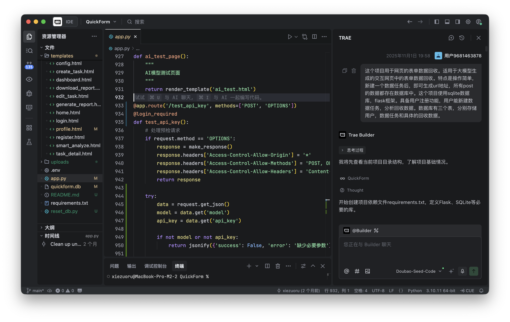
Trae开始规划，编写代码，并自主开始测试，半小时左右给出了一个接近可以使用的Demo。
QuickForm源自团队间的默契和信任
QuickForm的原型做好后，谢作如分别联系了方建文（温州大学）和林淼焱（温州科技高级中学），说我们做个有趣的项目吧，这个项目除了技术外，还需要学术支持，需要温州大学教育技术系的力量。方建文听了对项目的功能描述后问，技术支持来自哪里？他问的是哪个企业来提供技术支持。谢作如说，“AI+林淼焱”和“AI+谢作如”，够不够？
方建文和林淼焱是师生关系。实际上方建文有好多位学生同时也是谢作如的学生。QuickForm的顺利推进，源自团队间的默契和信任，还有价值观的一致。从以下细节可以看出：
通话后的第二天，林淼焱就把QuickForm部署到互联网上测试了。一周后，QuickForm正式开始公测。
提议QuickForm网站要开放服务，让大家都能免费使用。那就开放服务吧。
提议QuickForm代码要开源，让老师们自己更新、维护。那就开源吧。
提议Quick应该分为不同版本，面向不同需求，即使不开源的版本也应该免费，那就免费吧。
……
QuickForm发布后，谢作如在公众号上写了一篇文章，然后转发在朋友圈上。就这么简单，一个月内注册用户接近1000。用户基本上是老师，来自全国各地。他知道QuickForm解决了AI编程的痛点，会很受欢迎，但没想到怎么受欢迎。
文章链接：QuickForm：让大模型生成的交互网页也能回收数据
2025年12月27日，第二届中小学人工智能与创客教育大会在贵阳举办。QuickForm项目在大会上正式发布，从此真正走向全国。
QuickForm是一个AI原生项目
有人称赞说，“QuickForm”这个名字挺好的。其实就是Trae取的。开发QuickForm花了多少时间？对原型编写来说就最多花了两天。如果不是对Trae不熟悉，走了些弯路，半天时间足够了。在维护QuickForm的过程中，我们“手搓”过代码吗？没有。每一行代码都是AI写的。
要解决AI编程带来的新问题，用AI编写了一个新工具。用AI采集到的数据无法用传统方式分析，那就再借助AI进行数据分析。每一个环节和AI有关。这样的应用不再是传统的“AI+”，而属于“AI原生应用”。
普通教师借助AI，会不会能力大增？QuickForm项目可能就是一个很好的案例。两位教师利用业余时间，凭借对教育场景的深刻理解，做了一个深受中小学教师喜欢的AI项目，短时间吸引众多用户，这个在非AI时代几乎不可能出现。
QuickForm适合解决哪些问题？其实对数据安全不高的工作，都可以使用。教师可以用，学生也可以用。当然任何对数据交互有需求的都可以用。
QuickForm可能仅仅是起点
对有些老师来说，也许仅仅看到QuickForm让AI生成的在线测试题可以快速使用。如果从这一点看，任何问卷类服务都能做到。QuickForm的价值在于能让一些非答题类的交互网页，如教学游戏化、互动阅读、在线交流等，都能做到实时采集数据并互动起来。
当然，对谢作如和方建文来说，“野心”并不是停留在数据收集这一阶段。他们私下交流，认为在AI时代的课堂不应该满足于PPT这种单向传授知识的演示工具。为什么不使用交互网页？二十年前WebQuest、MiniQuest曾经风靡一时，只是开发在线课程的难度太高，最终曲高和寡。现在，AI大模型能快速写出网页代码，QuickForm又以低门槛的方式解决了数据读写和共享的问题。也许，会有越来越多的老师选择用交互网页来授课，并在网页中接入各种AI智能体。这样的课堂，也许才是我们希望看到的AI赋能的常态课堂。
QuickForm是什么？是一个信息系统还是软件？或许在QuickForm团队看来，更应该是一种新型的数据服务。学习QuickForm，并非是学习一个叫做QuickForm的软件，而是使用这种快速读写数据的形式，用最低门槛的形式设计出有价值的应用。
流量困境下催生出QFlink服务
2026年2月8日晚上，QuickForm团队正式启用新网站地址：https://quickform.cn。新网站设计了《免责声明》和各种相关资源。仅仅一个多月，注册教师超过4000+，学校3000+，覆盖全国所有省份。
2026年3月27日，温州都市报记者采访了QuickForm团队，以《温州老师“手搓”一款教学神器，全国教师抢着用！项目面临成长的“烦恼”》为主题刊发，呼吁有社会和政府力量来支持QuickForm的发展。为了能讲好QuickForm的故事，让更多人理解这是一个什么工具，团队再度借助AI编写了一个简单的网站地址：https://quickform.cc。
2026年4月14日，浙江都市快报记者采访谢作如，以《没写一行代码，却设计出一款教育届“小龙虾”，这位高中老师希望让乡村教师也能玩转AI教学》为主题刊发。文章提到“短短数月，实现从0到近8000人自发使用，谢老师用行动证明了AI不是高高在上的概念，而是可以握在手里的工具。”并强调了谢作如的期望——QuickForm能成为某种催化剂，加速老师们研究并驾驭AI赋能教育的进程。
暴增的用户带来了巨大的访问量。从4月份开始，QuickForm官方网站在高峰期出现服务崩溃已经成为常态。为解决这一问题，我们设计了多种方案：
1.将项目开源
现在，QuickForm已经分为教师版、校园版和在线版等三个版本。教师版开源，特点是单用户，适用老师们装在自己的电脑上，面向班级学生，在局域网内回收数据。项目组特意内置了Python环境，做成绿色软件，解压后一键启动。这个绿色软件的制作，现在就交给OpenClaw来配置、封装。
QuickForm校园版采用定向开源的方式，签署合作协议后即可拿到源码，并允许修改。为什么不直接开源？因为在互联网上部署的就是这个版本，担心有安全隐患。为什么要签署协议？为了找到志同道合的朋友，我们追求开源分享，希望你也一样。
而在线版为校园版的演示网站。因为考虑到要为很多教师服务，所以会做了一些流量方面的限制。在线版仅仅用于学习、调试，不宜作为真正教学，因为可能会并非流量的问题，导致访问不正常。
2.设计QFLink协议
QF数据互联服务简称“QFLink”，用于QuickForm系列版本的数据互联，实现在线版和其他版本之间的联动。其用途主要有两点：用户认证登录和数据任务迁移。新版的校园版（2.0）和教师版（2.5），默认都支持了QFLink。
当校园版的管理员开启了QFLink用户登录服务，在线版的用户都可以临时“借用地盘”使用数据回收服务。其使用方法和教师版完全一致，即选择“QFLink登录”，再“导入任务”，完成后导出任务。数据任务导入和导出，网页中的API地址也会同步修改，非常方便。
目前，温科高的校园版已经支持QFLink服务。很快的，中鸣人工智能教学平台，浙江省的官方AI教学平台都会相继推出支持QFLink服务的校园版QuickForm。敬请期待。
QuickForm故事还在继续
2026年4月17日，QuickForm的注册教师超过一万。2026年5月1日，QuickForm的注册单位（学校）超过一万。2026.4.29，QuickForm项目组在全国中小学人工智能赋能教育与人工智能通识教育研讨会上发布第一批合作单位（校）名单，一共61所学校（单位），加上技术援藏1所，共62所。
6月份，QuickForm开始支持多模态数据回收，即支持各种文件上传和分析。QuickForm开始从一个软件走向一个服务。
QuickForm的故事还在继续，欢迎您的加入，更欢迎各大公益机构对这一项目提供支持。
QuickForm的规划
QuickForm最初仅仅为温州科技高级中学设计，本来并没有什么长远的规划，但是因为喜欢QuickForm的老师太多了，那就不能辜负大家的厚爱，必须把这个项目做好。
我们接下来准备做好这几个工作。
维护QuickForm官方网站
让更多教师用上QuickForm，首先需要将QuickForm部署在互联网上。QuickForm的官方网站就是长期在线的校园版，也称“在线版”，支持大规模用户的学习和调试。
目前我们已经申请了独立域名，购买了云服务器。经费来自谢作如和方建文博士的科研经费。实际上也花不了很多钱，最核心的付出是我们的业余精力。
项目介绍地址：https://quickform.cc
在线版地址：https://quickform.cn
我们计划将QuickForm接入各地的智慧教育平台。如果一切顺利，第一个接入的将会是上海的“三个助手”平台，最终目标是国家智慧教育平台。
做好QuickForm的开源工作
QuickForm教师版已经开源，目前已经实现了“内置环境，解压可用”。我们会做好教师版的维护工作，确保能够在不同操作系统稳定运行。
毕竟我们不是企业，没有把握做到让QuickForm网站能同时服务很多人。最稳定可靠的做法是，让更多教师能自行部署和维护QuickForm。我们期望QuickForm如同一颗火种，能唤醒教师们驾驭AI编程（氛围编程）的意识。毕竟，我们也是依赖AI大模型进行编程，自己并没有写过一行代码。
做好AI赋能教学的培训工作
AI是工具，但不是传统意义上的普通工具，而是一个能创造新工具的工具，能够自主工作的工具。AI赋能教育教学，不是购买某个企业开发信息系统就完事了，而是要自己能驾驭AI，去完成自己之前做不到的工作，去创造更多的工具，为自己也为他人。
我们期望通过培训，让更多教师通过QuickForm而深度理解AI。只有掌握了AI编程，才能真正理解AI的意义。不要给自己的人生设限，不要划分什么文科理科，有了AI，决定你的成长空间在于你的“心”有多大。
实现QuickForm的分布式部署
QuickForm的设计理念是“极简”“交互”。而“极简”的代价是牺牲了数据安全，“交互”导致数据读写频繁。因此QuickForm不宜做长期、敏感的数据采集、保存工作。读写频繁的系统也难以承受大量用户的并发使用，最好的解决方案就是分布式部署。比如，有条件的老师可以部署在自己的笔记本电脑中，有条件的学校可以部署在学校局域网服务器中，有条件的区域教育管理部门，则可以部署一个供全区使用。
我们算过成本，很多学校动辄耗费数万、数十万来购买企业开发的AI教学系统，留点零头就能部署一个QuickForm。但是，前提是有团队能提供QuickForm的商业服务。对于开源项目来说，存在很多可行的商业服务机会，如Linux、安卓等。
关于QuickForm的问与答
1.QuickForm开源吗？
QuickForm分为三个版本，在线版、校园版和教师版。目前教师版开源，校园版免费，仅向项目组合作校（单位）开源，在线版面向所有人。
2.QuickForm校园版为什么不开源？
QuickForm校园版在网络上服务，基于安全考虑，我们不能完全开放源码。如果需要，可以和我们签署合作协议，不用付费，只要确保不将源码扩散出去。实际上，大家完全可以基于教师版增加功能。
协议链接：https://mp.weixin.qq.com/s/JIJSxCsL-ImGNuS2UnoAZg
2.QuickForm在线版为什么要“限流”？
为了能支持更多的老师快速体验并学习“QuickForm+AI大模型”，我们提供了在线版。但是我们实在没有能力支持大规模用户同时访问而带来的并发流量，只能限制流量（即短时间内的同时访问频率和接口访问次数），请老师们理解。如果我们得到更多的支持，包括经费和技术两方面，我们肯定会逐步放开限制。
4.QuickForm在线版会收费吗？
我们没有收费的意愿和渠道。虽然有领导期望我们能收费，收很低的费用，但我们并不愿意这样做。如果QuickForm收费了，那一定是说明QuickForm的维护遇到了瓶颈，需要借助外部力量的介入，如需要一定的经费来寻求更加专业的程序员支持。
5.我们需要培训，能支持吗？
对于项目合作的单位，我们将提供相关培训服务，但并非免费而是有偿的。实际上，QuickForm项目组不会直接为项目合作单位来做培训，因为我们有正常的教学工作，难以抽出时间来。但是，QuickForm的微信群里有很多水平高超，研究深入的老师，我们将通过遴选机制，建立一支胜任教师培训的师资队伍，以支持全国各地的培训活动。
6.我可以用QuickForm做收费培训或者课程吗？
我们很期待有更多的老师、大学生、自媒体博主或者商业培训团队，基于QuickForm做收费培训或者收费课程。比如，温州大学的申屠诗怡、黄方濠等七位同学，就在知识星球上做了一个名叫“QF的AI教学后花园”，开通一周内，就有数百教师报名。
开发与管理团队
QuickForm团队由一线教师发起，不断有老师和企业加入到开发团队。
开发团队
QuickForm团队主要来自温州科技高级中学谢作如和温州大学方建文博士的学生，以及名师工作室相关成员。
当前团队不完全名单：
谢作如（温州科技高级中学），总体规划
方建文（温州大学），教研推广
林淼焱（温州科技高级中学），编程实现
陈恩慈（温州科技高级中学），测试
……
教研团队名单：
董丹丹（温州科技高级中学）
林新跃（温州科技高级中学）
卢亚涯（宁波市象山县实验中学）
申屠诗怡等（温州大学教育技术系，知识星球“QF的AI教学后花园”团队）
……
外援团队名单：
李 开（上海谕视）
郑 祥（温州第十七中学）
钟以维（三门县教师发展中心）
陈 亮（南宫市红庙中心学校）
白鹭辉（厦门市演武小学）
才格力图（北京师范大学克拉玛依附属学校）
……
项目合作联系人
如果你想加入项目组，请了解合作协议后填写一份意向表。
方建文：beginnerfjw@163.com
谢作如：8334180@qq.com
支持团队
XEduPro团队
OpenHydra团队
DFRobot团队
掌控板团队
清华大学出版社AI通识教材编写组
全国中小学人工智能与科技教育大会组委会
全国中小学STEAM教育大会组委会
……
期待您的参与！
版本说明与更新记录
QuickForm的每一次版本升级，都来自我们对人工智能赋能教育的理解，来自我们对一线教师需求的回应。
版本说明
QuickForm分为教师版、校园版和在线版等三个版本，基本功能一致，都可以无限制收集表单数据，核心区别在于教师版为单用户，校园版支持多用户，而在线版为校园版的演示网站。
在线版
在线版即为QuickForm校园版的演示网站。因为考虑到要为很多教师服务，所以做了一些关于并发流量方面的限制，同时增加了社区交流功能。在线版仅仅用于学习、调试，不宜作为真正教学。因为同时访问的用户一多，可能会导致数据存取的工作不正常。
需要强调的是，在线版使用了ssl（https）协议，Deepseek、豆包、扣子编程之类的大模型能直接访问，调试功能比较容易。我们建议老师们用在线版调试数据任务，再导出到其他版本，如校园版和教师版。
QuickForm在线版地址：https://quickform.cn
校园版
顾名思义，QuickForm校园版可以安装在学校服务器上，供全校教师一起使用。QuickForm校园版对服务器操作系统没有特别要求，性能稍好一点的电脑，安装了Python环境和PostgreSQL（数据库）即可。服务器具体配置需求与用户数量和访问频率有关。
我们为QuickForm校园版做了优化，管理员可以导入用户，通过Web页面即可管理各种信息，如是否支持注册，是否需要认证等。
特点：多用户，免费软件，定向开源。目前，校园版仅仅面向项目合作校（单位）开源。
如果有意向加入项目合作，请先阅读协议，再联系方建文或者谢作如。联系方式如下：
方建文：beginnerfjw@163.com
谢作如：8334180@qq.com
教师版
QuickForm教师版为开源软件，支持任何能运行Python的操作系统，对电脑配置要求很低，适合安装在教师的个人电脑上，包括笔记本电脑。
特点：单用户，开源软件，可后期开发。通过开源仓库，直接下载使用即可。
QuickForm教师版的具体功能变化以github和gitee上为准。
如何选择版本
如果你仅仅为了试用一下QuickForm，那么直接使用我们已经部署好的QuickForm在线版（QuickForm.cn）就好了，地址为：https://quickform.cn。
如果你执教的某节公开课需要体现“AI赋能”“精准教学”这些亮点，期望能稳定运行，建议在本地部署QuickForm校园版或者教师版。因为QuickForm在线版访问人数多，很难确保稳定可用。
如果你想要在日常课堂教学中都能使用QuickForm，建议在自己的电脑上部署QuickForm教师版。下载QuickForm教师版，解压后就可以使用。这样可以确保网络访问稳定，以及数据的安全。
如果你希望学生在家里也能使用，即课外也能使用。那么你可以使用借助外网穿透技术，将自己的电脑Web服务映射到外网。当然，你也可以购买某个云服务器（如阿里云、腾讯云等），部署教师版，拥有自己的专用QuickForm服务。
如果你是学校的领导（数字化建设方面），希望全校老师都能使用QuickForm，以此为抓手提高老师们的AI赋能教学能力，那么请联系我们。加入项目组后，部署QuickForm校园版供全校师生服务。
不管你出于某种需求，我们都强烈建议你先注册https://quickform.cn，先用最快，最简洁的方式用一次QuickForm，熟悉操作后，再做后续的选择。
感谢陈亮老师整理的QuickForm版本对比图
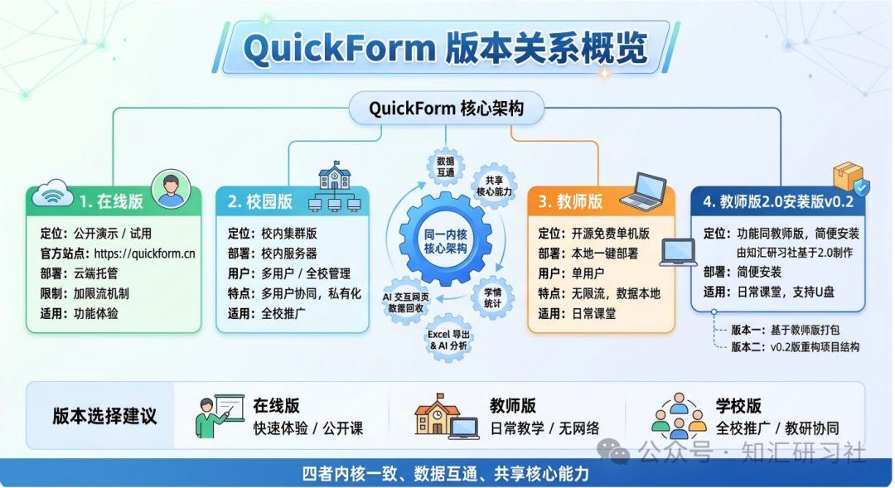
更新记录
2026.5，发布教师版2.5，支持多语言版本，支持文件数据的回收。
2026.5，发布教师版2.0，校园版1.0，推出“QF数据互联”功能，实现在线版、校园版和教师版的数据任务同步。
2026.5.1，QuickForm注册单位（学校）超过一万。
2026.4.29，QuickForm项目组在全国中小学人工智能赋能教育与人工智能通识教育研讨会上发布第一批合作单位（校）名单。
2026.4.17，QuickForm注册教师超过一万。
2026.4.14，浙江都市快报记者采访谢作如，以《没写一行代码，却设计出一款教育届“小龙虾”，这位高中老师希望让乡村教师也能玩转AI教学》为主题刊发。因为流量过大，在线版启用“限流”功能。
2026.3.27，温州都市报记者采访了QuickForm团队，以《温州老师“手搓”一款教学神器，全国教师抢着用！项目面临成长的“烦恼”》进行报道。QuickForm项目网站上线：地址：https://quickform.cc。
2026.3，QuickForm分化为在线版、校园版和教师版，教师版1.5发布。
2026.2.8，QuickForm校园版升级上线，启用新域名：地址：https://quickform.cn，校园版开始征集合作单位。
2026.1，QuickForm教师版1.2发布，内置Python环境，实现一键启动。
2025.12.27，QuickForm项目在第二届中小学人工智能与创客教育大会上正式发布，并举办公益工作坊。
2025.12，QuickForm分化为教师版和校园版，教师版1.0开源。
2025.11.1，使用Trae编写了QuickForm Demo版本，一周后在公网部署。
使用协议与声明
QuickForm因为AI赋能教育而生，本身是氛围编程（Vibe Coding）的作品。即使得到大量老师的欢迎，我们团队依然保持初心，免费分享。
开源与免费使用协议
QuickForm分为两个版本，其中教师版为开源软件，适用安装在普通教师自己的电脑上，供上课快速使用；校园版为免费软件，适合一个区域（学校或者县域）多人一起使用。
1.QuickForm教师版使用开源软件协议
QuickForm教师版使用MIT协议。该协议核心内容为：
特此免费授予任何获得本软件及相关文档文件（以下简称”软件”）副本的个人，不受限制地处理本软件，包括但不限于使用、复制、修改、合并、发布、分发、再许可和/或销售本软件的副本，并允许向其提供本软件的个人在满足以下条件的情况下这样做：
上述版权声明和本许可声明应包含在本软件的所有副本或重要部分中。
2.QuickForm校园版使用免费软件协议
我们为QuickForm校园版设计了一份“特立独行”的《合作协议》，核心内容为：免费使用，但是我们不提供服务（抱歉，我们真的服务不过来啊）；合作期间要为项目组提供优质案例（我们希望找到志同道合的教育工作者）；合作结束可以继续使用，可以修改升级（欢迎一起推动国内的人工智能赋能教育的工作）。
免责声明
为了降低技术门槛，QuickForm选择了无加密的方式收集数据，不适合用来收集隐私信息。为了提醒更多老师，我们特意设计了下面的“免责声明”。
请在使用 QuickForm 之前仔细阅读以下免责声明。通过使用本服务，即表示您理解、同意并接受本声明中的所有条款。
1.服务性质与说明
QuickForm 是由温州科技高级中学与温州大学联合开发的开源、轻量级表单数据回收系统，旨在为基于大模型生成的交互网页提供便捷的数据收集、分析及可视化功能。其设计初衷是服务于教学、调研、反馈等公开或低敏感度场景的数据回收需求。
2.数据安全重要警告
数据传输风险：QuickForm 目前采用未加密的 API 接口进行数据传输与接收。这意味着在数据提交过程中，信息可能以明文形式在互联网上传输，存在被第三方截获、查看或篡改的潜在风险。
开源软件特性：作为开源软件，其代码公开可查，这既有利于透明和协作，也意味着任何安全漏洞一旦被发现，可能被恶意利用。我们鼓励社区参与改进，但无法对由代码衍生的所有版本或部署环境的安全性提供担保。 因此，系统不具备安全存储或传输敏感、私密数据的能力，严禁用于收集任何机密或个人敏感信息。
3.大模型API依赖与风险
QuickForm 的核心功能之一是调用大模型对收集的数据生成智能分析报告。请注意：
QuickForm 本身不提供大模型能力，您需要自行配置并接入其他第三方大模型服务商（如DeepSeek、GPT等）提供的API接口。
在此过程中，您通过QuickForm提交的数据将被传输至您所配置的第三方大模型API。这引入了额外的信息传递环节和潜在的泄漏风险，包括但不限于：数据传输至第三方服务器可能被拦截；第三方服务商的数据安全政策与实践不在QuickForm的控制范围内。
您有责任审慎选择并了解所使用的大模型服务商的隐私条款与数据安全措施。绝大多数商业大模型API对提交数据采用临时处理或预存方式，通常不会长期留存或用于核心模型训练，但仍请知悉数据离开QuickForm系统后的流转风险。
由配置或使用第三方大模型API所产生的任何数据安全风险、合规问题及相关后果，均需由您自行评估和承担。
4.禁止提交的数据类型
您明确承诺并同意，不得通过 QuickForm 提交任何以下类型的敏感或个人隐私数据，包括但不限于：
密码、身份验证信息
身份证号码、护照号码、社保号码等个人身份标识信息
银行账户、信用卡号等金融信息
健康档案、医疗记录等敏感个人信息
任何法律、法规或监管规定认定为敏感或需要特殊保护的信息
提交此类信息所产生的任何风险与后果将由您自行承担。
5.用户责任与承诺
作为数据提交方（如教师、组织者）及系统部署/使用者，您应：
仅将 QuickForm 用于非敏感、可公开数据的收集。
在生成交互网页时，明确告知最终用户（如学生）本表单的数据传输不具备加密保护，且数据可能经由第三方大模型API处理，提示其切勿提交任何个人敏感信息。
审慎配置和管理第三方大模型API密钥，并遵守其服务条款。
对通过本服务收集的所有数据进行全流程的妥善管理，遵守《中华人民共和国网络安全法》、《中华人民共和国个人信息保护法》等相关法律法规。
6.免责条款
鉴于上述技术限制与外部依赖，温州科技高级中学、温州大学及其关联开发人员（以下统称“开发方”）：
不对 通过 QuickForm 服务传输、存储的数据，以及传输至第三方大模型API过程中的安全性、保密性、完整性做出任何明示或默示的担保。
不承担 因数据传输过程中被拦截、泄露、篡改、丢失，或因使用、配置第三方大模型API所导致的任何直接或间接损失、责任、索赔或损害。
不承担 因使用本服务（包括数据丢失、服务中断、分析报告偏差等）而产生的任何后果。
保留在不事先通知的情况下修改服务功能或本免责声明的权利。
7.服务与支持
本服务按“现状”提供。开发方致力于优化服务体验，但对于服务的持续性、可靠性不做绝对保证。对于数据收集与分析之外的需求，或对数据安全有更高要求的场景，建议您采用其他具备完整安全防护措施的专业系统。
总结与再次确认
QuickForm 是一款开源的便捷工具，但其数据传输过程未加密，且依赖第三方大模型API，并非安全的数据管理系统。请务必仅将其用于收集不涉及个人隐私与机密的公开、非敏感信息。您的注册和使用行为将被视为已充分理解并接受其中存在的所有风险。
请注意： 本免责声明旨在清晰提示风险，不构成法律意见。如您的应用场景涉及重要数据，建议咨询法律或技术安全专业人士。
校园版合作单位
QuickForm在线版只能用于学习研究，难以承担真正上课的使用。为此，我们开源了教师版（单用户），可以安装在教师的个人电脑上。考虑到种种原因，多用户版（即校园版）目前只免费提供给项目合作校（单位）。要成为合作校（单位），得签订合作协议，加盖公章。
注：考虑到快递寄送比较麻烦，我们正在寻求一种更加便捷的方式进行签约。如您有好主意，请告诉我们。
第一批合作校（单位）名单
我们以2026年4月底收到的协议为准，确定了第一批合作校（单位），共61所。
| 省份 | 学校名称 |
|---|---|
| 安徽省 | 南陵县籍山镇中心小学 |
| 福建省 | 厦门市槟榔中学 |
| 甘肃省 | 甘肃省张掖中学 |
| 广东省 | 东莞市塘厦第二初级中学 |
| 广东省 | 东莞市南城商务区北部学校 |
| 广西壮族自治区 | 广西贺州市平桂区黄田镇新村小学 |
| 湖南省 | 桑植县第一中学 |
| 湖南省 | 湖南省株洲市天元区菱溪中学 |
| 江苏省 | 江阴市毗陵路小学 |
| 江苏省 | 江苏省淮安市涟水滨河外国语学校 |
| 江苏省 | 江阴市青阳中学 |
| 江苏省 | 南京河西外国语学校 |
| 江苏省 | 江苏省金坛中等专业学校 |
| 江苏省 | 江苏省马坝高级中学 |
| 江苏省 | 东台市溱东镇学校 |
| 江苏省 | 苏州科技城外国语学校 |
| 江苏省 | 盐城市盐南高新区串场河幼儿园 |
| 江苏省 | 南通大学附属中学 |
| 江苏省 | 常州市新北区新龙湖实验小学 |
| 上海市 | 上海大学附属嘉定留云中学 |
| 上海市 | 上海市奉贤中学 |
| 上海市 | 上海市民办桃李园实验学校 |
| 上海市 | 上海市闵行区七宝镇明强小学 |
| 上海市 | 上海市闵行区浦江第二中学 |
| 上海市 | 上海市浦东新区建平康梧中学 |
| 山东省 | 山东省寿光市教育科学研究中心 |
| 山东省 | 东营市垦利区第二实验小学 |
| 山东省 | 淄博师范高等专科学校附属小学 |
| 山东省 | 济宁学院附属高级中学 |
| 陕西省 | 宝鸡高新第三小学 |
| 四川省 | 筠连县沐爱镇中心校 |
| 四川省 | 珙县米市街小学校 |
| 四川省 | 成都大学附属小学 |
| 四川省 | 成都市双流区教育科学研究院 |
| 四川省 | 成都市茶店子小学校 |
| 天津市 | 天津市红桥区教师发展中心 |
| 新疆维吾尔自治区 | 伽师县第二小学 |
| 新疆维吾尔自治区 | 北京师范大学克拉玛依附属学校 |
| 新疆维吾尔自治区 | 精河县第二中学 |
| 新疆维吾尔自治区 | 吉木萨尔县准东五彩湾学校 |
| 新疆维吾尔自治区 | 巴音郭楞蒙古自治州 |
| 新疆维吾尔自治区 | 第二师铁门关市华山中学梨华校区 |
| 新疆维吾尔自治区 | 新疆昌吉市第四中学 |
| 云南省 | 安宁市石江学校 |
| 云南省 | 庆来学校 |
| 云南省 | 昆明高新一小教育集团科医路校区 |
| 云南省 | 昆明市实验中学 |
| 浙江省 | 温州市瓯海区潘桥中学 |
| 浙江省 | 温州市瓯海区第一高级中学 |
| 浙江省 | 海盐县向阳小学教育集团（海沙校区） |
| 浙江省 | 嘉兴市实验小学 |
| 浙江省 | 浙江省余姚市梨洲小学 |
| 浙江省 | 杭州市胜利实验笕成小学 |
| 浙江省 | 温州市南浦实验中学 |
| 浙江省 | 温州市瓯海区外国语学校教育集团 |
| 浙江省 | 浙江省舟山市岱山县教师进修学校 |
| 浙江省 | 温州市平阳县昆阳镇第二中学 |
| 浙江省 | 永嘉县实验中学 |
| 浙江省 | 温州市第十七中学 |
| 浙江省 | 舟山第一小学北校区 |
| 浙江省 | 温州市龙湾区外国语学校 |
校园版合作校（单位）分析如下：
浙江省 (14) ████████████████████████ 22.95%
江苏省 (12) █████████████████████ 19.67%
新疆维吾尔自治区 (6) ██████████ 9.84%
上海市 (6) ██████████ 9.84%
四川省 (5) ████████ 8.20%
山东省 (4) ██████ 6.56%
云南省 (4) ██████ 6.56%
广东省 (2) ███ 3.28%
湖南省 (2) ███ 3.28%
天津市 (1) █ 1.64%
广西壮族自治区 (1) █ 1.64%
陕西省 (1) █ 1.64%
福建省 (1) █ 1.64%
甘肃省 (1) █ 1.64%
安徽省 (1) █ 1.64%
如何加入QuickForm合作校（单位）
如果你想加入项目研究，请了解合作协议后填写一份意向表。
方建文：beginnerfjw@163.com
谢作如：8334180@qq.com
使用指南
入门：四步体验QuickForm
只要你用大模型（deepseek、豆包之类）制作过交互网页，就具备使用QuickForm的基础。QuickForm本身不具备生成交互网页的能力，但提供了数据接口，能够把网页数据汇总起来。
使用 QuickForm 收集交互网页数据非常简单，只需以下四步。
第一步：生成API地址
访问 QuickForm在线版（演示地址：https://quickform.cn），注册账号后，在“数据任务”页面中点击“创建新任务”，系统将自动生成一个专属的API接口地址。该地址如同您的“数字收件箱”，所有学生提交的数据都会汇集于此。
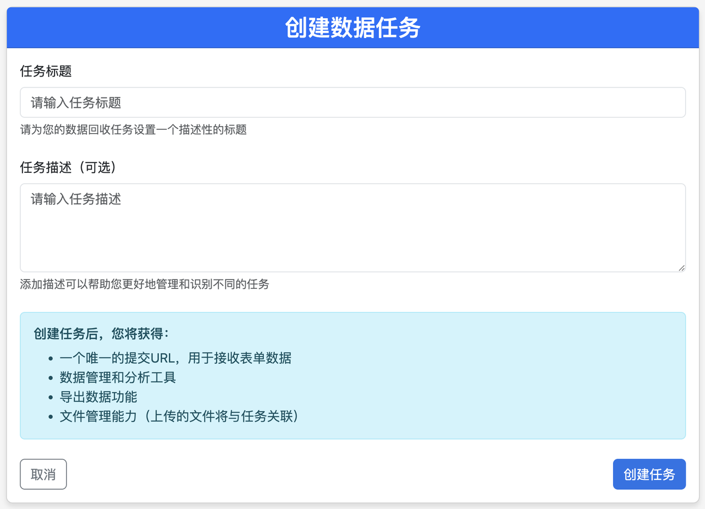
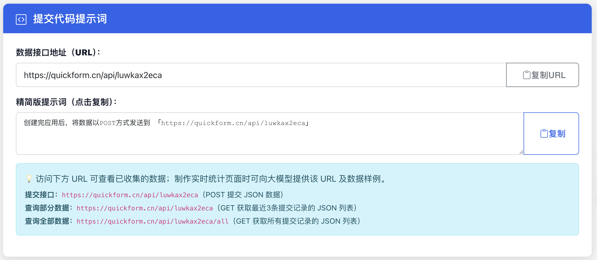
第二步：生成交互网页
继续使用您熟悉的大模型（如 DeepSeek、GPT 等）生成交互网页，只需在提示词中加入一句： “请以POST方式向（您的 QuickForm 数据接口地址）发送数据。”
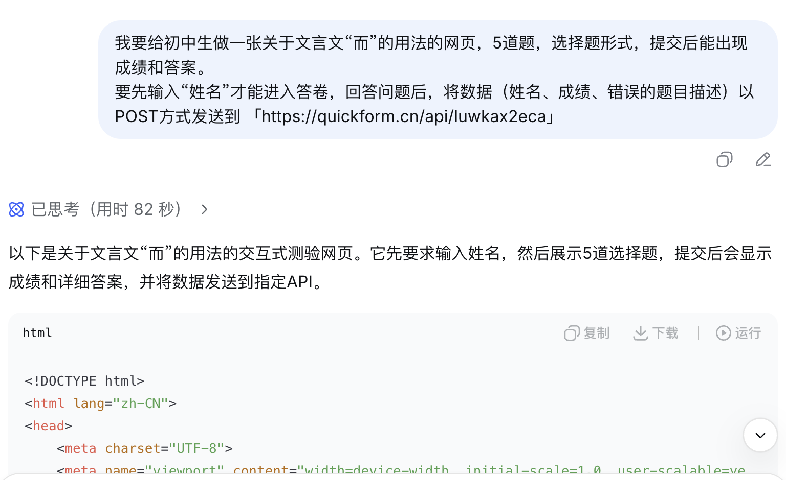
大模型会自动在网页中嵌入数据提交功能。学生完成操作后，数据将通过接口自动存储至您的 QuickForm 账户，并于数据任务关联。
**注意：**你可以先让大模型制作普通的交互网页，再增加发送数据的指令，大模型基本上都能正确理解，并生成直接可用的网页代码。
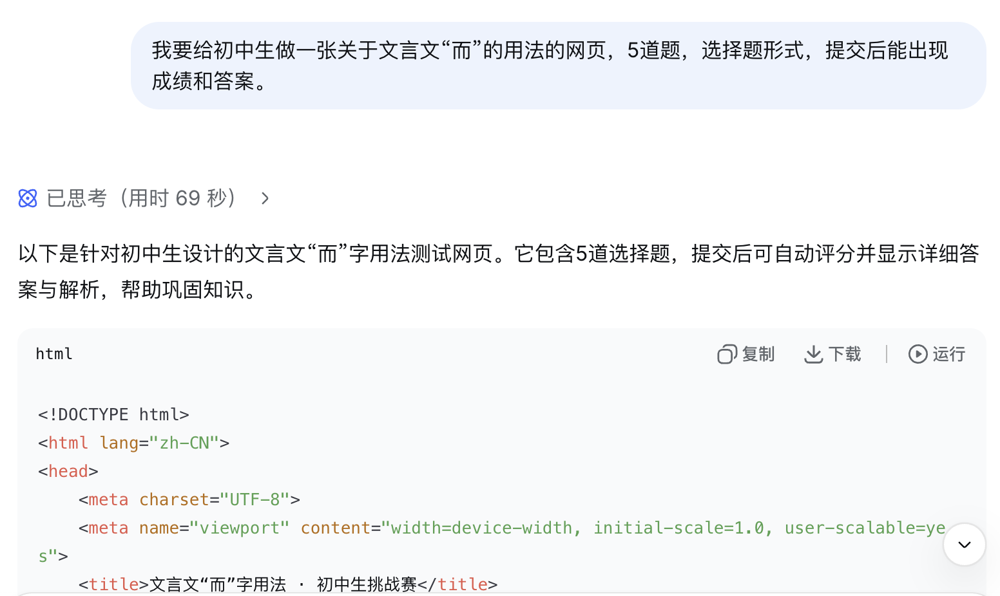
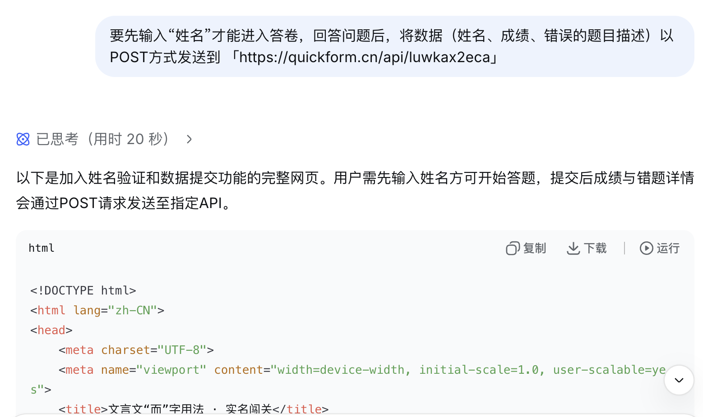
所以，你之前做的不具备收集数据能力的网页，都可以用这种方法修改，增加功能。
第三步：收集与查看数据
你可以将生成的网页地址发给学生（豆包可以分享预览地址），也可以将网页上传到QuickForm的数据任务中，将得到一个访问地址。
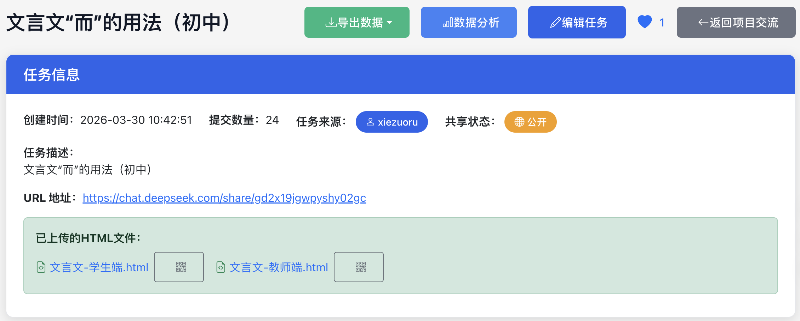
学生使用交互网页并提交数据后，您可以在 QuickForm 任务界面实时查看所有提交记录。系统支持逐条查看详情，也支持批量导出为 Excel 表格，便于后续统计与存档。
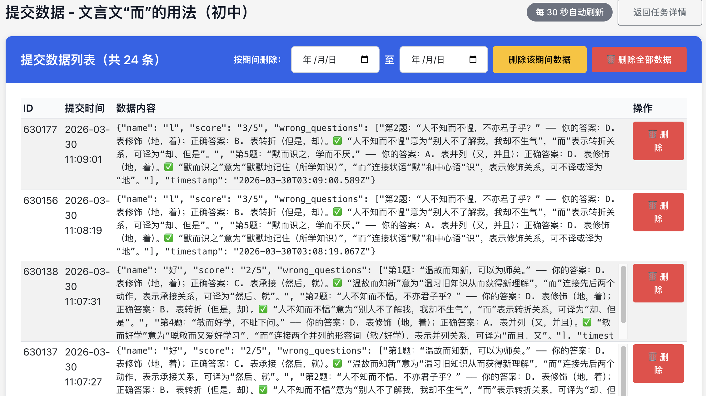
第四步：生成智能报告
若数据量较大、手动分析困难，QuickForm 支持一键生成智能分析报告。系统可调用大模型对数据进行初步分析，生成包含提交人数、平均分、错误分布、高频问题等内容的可视化报告，帮助教师快速把握教学重点与难点。您也可导出数据，结合更精确的提示词进行深入分析。
注意：要一键生成智能分析报告，首先得有大模型的 APIKEY（API密钥）。具体请参考“大模型服务API密钥获取”。
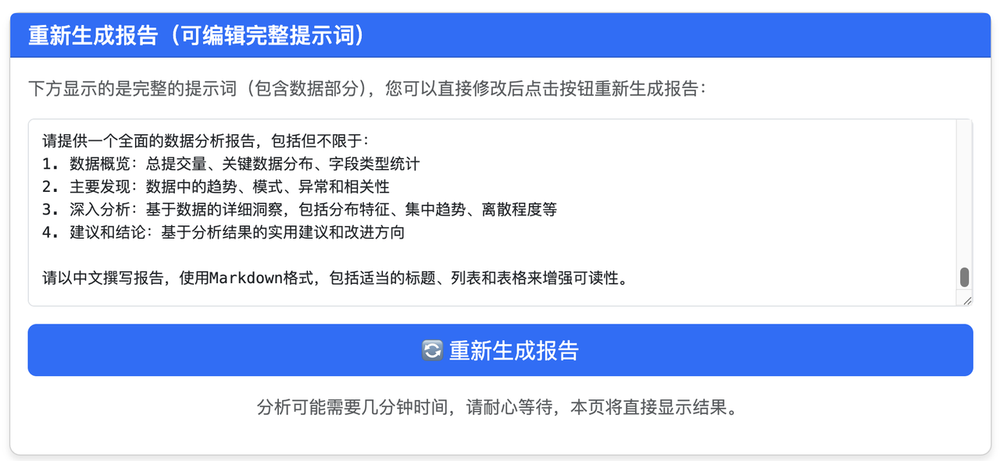
你也可以生成实时的数据大屏，在教学过程中根据学生的学习情况调整教学进度，效果如下面视频所示。具体请参考“进阶：数据分析和大屏显示”。
总结：把QuickForm看成临时“数据储物柜”
需要说明的是，以上四个步骤并非固定。你可以先让大模型生成网页，再加入“QucikForm数据采集的提示词”，也可以直接一步到位，在提示词中把每个步骤都写清楚。
你可以把QuickForm后看成临时“数据储物柜”，存取“数据”的网络地址，那么就能做出各种精彩的互动网页来。任何需要回收数据的地方，都可以借助QuickForm的能力。总之，QuickForm以最低门槛和灵活操作，实现了大模型生成代码的数据回收。
最后，看一个简单的介绍视频吧，点击视频可以全屏观看。
原理：QuickForm的工作流程
在第一次接触交互网页制作的老师眼里，QuickForm是一个神奇的网站。只要一句话，大模型生成的网页嵌入了QuickForm的数据地址，数据就很神奇的汇聚在指定的地方。实际上，回收数据本来就是网页的交互功能之一，属于最基本的能力。
QuickForm的工作原理
任何网页要实现数据传递，一般都通过表单（From）技术。顾名思义，表单就是网页上的表格。注册用户、登录网站等操作，都要先在表单上填写一些信息。那些文本框、单选框、多选框、下拉菜单等，都属于表单中的各种控件。每个表单都有一个“action”属性，表示表单要提交的地址。这个地址可以是网页自身，也可以是其他网页。
QuickForm的原理是提供了一个写入和读出的数据接口（WebAPI），然后将任何提交过来的数据分类保存在数据库中。因为每一个数据任务的地址都是不同的，有独特的标识（即APIID），所以不会混淆。其工作流程如下：
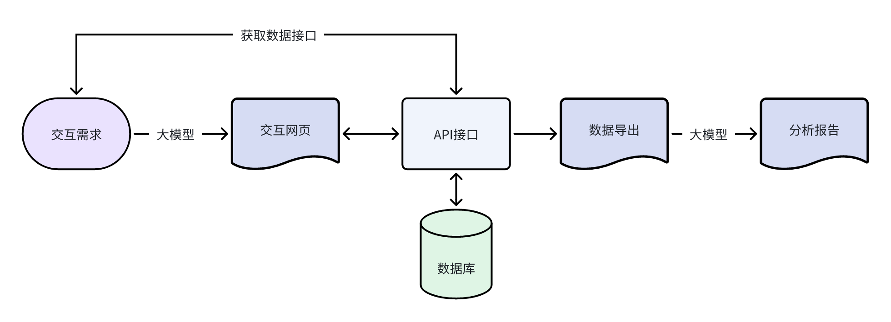
因此，我们可以把Quickform提供的WebAPI地址看成是一个云盘（U盘），可以随时写入数据，也可以读出。只要我们对大模型说：“……请将网页的数据以POST形式提交到……”实际上就告诉大模型，这个网页要用表单技术来提交数据，表单的“action”属性地址就是提供的URL，数据提交方式（method）是POST。因为表单技术很成熟，大模型都能理解，所以基本上所有大模型都能正确生成网页。
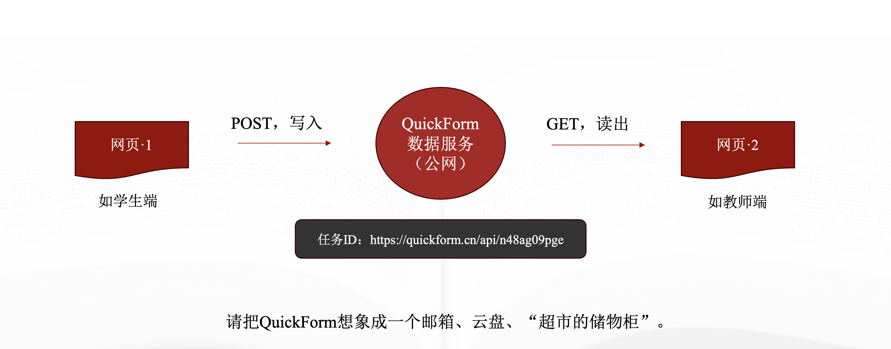
需要强调的是，浏览器的数据传输（即前后端交互）经历了好几个阶段。最初使用“Form”，后来使用XMLHttpRequest，现在则基本上使用Fetch API。具体请参考“学习资料”中的“网页开发基础”。
QuickForm的设计理念
很多人会认为表单的数据要按照一定的规范设计，一开始就要规划好各种字段数量和类型，否则将无法正常保存也难于做后续分析。的确，传统的表单数据是需要精确定义了字段数量和类型，然后借助SQL语言进行分析。
QuickForm的设计理念是“用AI解决AI的问题”，先把所有的数据合并为一个“包”，整体保存，然后再借助大模型将收集到的数据逐一解开进行分析。即使提交到QuickForm的数据缺少规范，看起来是凌乱的，但是在大模型的强大能力支持下，依然可以做分析统计。事实证明，QuickForm的设计是可行的。用户不需要了解数据类型之类的专业知识，不用关心数据格式和SQL，只要能描述要求，能正确回收数据，大模型就能协助做好后续的分析工作。
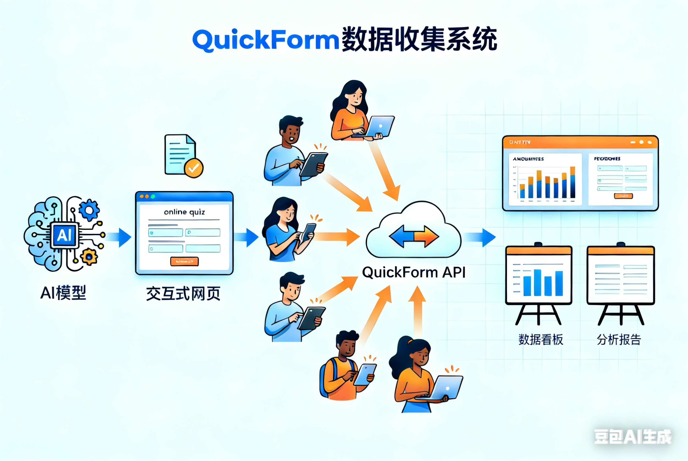
“用AI解决AI的问题”，实际上继承了图灵的思想，就是“用机器打败机器”。因此如果想得到更好的效果，你可以下载数据后，直接和大模型对话，以得到更加精细化、个性化的分析。
QuickForm的教学应用
QuickForm提供的API不仅可以写入（POST方式），还可以读出（GET方式），因此可以做多种交互网页，如表单提交、实时统计等。而这些都通过同一个API地址就能实现，降低了难度，又不牺牲其灵活性。
经典应用：将数据用POST方式提交到QuickForm。如问卷回收，在线考试等。
交互分析：用网页1提交数据，再做一个网页2读取数据实时分析。如数据看板、数据驾驶舱、数据大屏等。
即时互动：在一个网页上边提交数据，边读取数据。如聊天室、留言本等。
组合应用：多个数据任务结合，可以做出复杂的应用来。如用数据任务1（WebAPI）来发布任务，用数据任务2来接收答题情况。
实际上，QuickForm不仅为教师设计，学生也能用来做各种科创作品，甚至可以用来替代MQTT服务器，结合开源硬件设计物联网作品。目前QuickForm已经支持多模态数据回收，即文件上传，还支持可读不可写、可写不可读等复杂的数据任务。
QuickForm的能力边界
为了实现极致的简单易用，即“极简”，QuickForm牺牲了牺牲了数据的安全性。数据可读可写，API地址在前端页面中的明码可查。因此，你务必要了解其能力边界，做到如下几点：
1.不要用QuickForm记录具备敏感数据。涉及到人名、通讯信息、成绩之类的数据，最好用脱敏的方式来做，如使用班级编号而不是学生名字。
2.不要用QuickForm长期存储某一类数据。QuickForm参考微信小程序上的“即用即开，用完即走”的理念，一个数据任务有特定周期，结束后就关闭，有用的数据导出。
3.不要用QuickForm存储大量数据。QuickForm.cn是校园版的演示网站，不宜用来记录和读取太多的数据，否则会给服务器带来太多压力。强烈建议使用本地的教师版。
如果你因为误用QuickForm而造成数据泄密，我们不承担责任。具体请参考“免责声明”。
浏览器推荐
在任何编程语言中，网页语言（HTML）的兼容性是做得最好的。因此用网页（HTML）来编写教学课件是未来的方向。考虑到兼容性，我们极力推荐使用谷歌浏览器。
进阶：数据分析和大屏显示
当你用QuickForm收集了相关的数据后，下一步就是分析数据。虽然在“任务详情”中能看到所有回收数据，但毕竟不够直观。为此，QuickForm设计了多种数据分析的方法，其中最常用的是数据大屏。
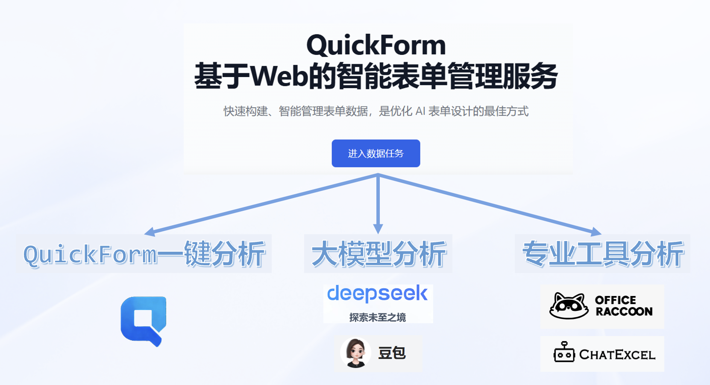
导出数据，借助工具分析
对于简单的表单数据，导出数据（如csv格式）后用Excel打开，即可分析。但是，QuickForm的数据大部分是复杂的，并非完全结构化，这就需要借助大模型和专业数据工具来分析。
方式1：借助常见的大语言模型
无论是导出csv或者json格式，大模型都能分析。最好同时上传回收数据的网页问文件，让大模型能够充分理解这些数据的意义，即数字分别代表什么。
参考提示词：
借助附件中的网页文件，我收到了相关数据（见csv文件），请根据这些数据写一份分析报告。
方式2：借助数据分析方向的AI工具
如果数据比价复杂，大模型可能分析不够准确。推荐使用专业的数据分析工具，如腾讯的WorkBuddy、商汤办公小浣熊等。
数据大屏形式实时分析
数据大屏也称“数据看板”（dashboard）。在企业数字化场景中，通常指通过可视化方式将关键业务指标、数据趋势、运营状况等信息集成展示于单一界面的大屏系统。课堂教学中，使用数据大屏可以实时了解学生的学习情况，一目了然，的确很受欢迎。很多老师因为看到炫酷的数据大屏效果，而被大模型+QuickForm的能力深深打动。
顺便说一下，关于数据大屏的需求是平阳的谢贤晓老师最早提出。下面是她在听一节课公开课时拍的照片。
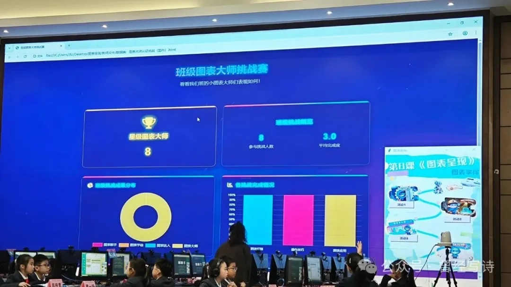
山东德州的高老师（立羽老师）做了一个很清晰的教程，值得初学者参考使用。但需要注意的是，大模型的能力变化很大，完全按照视频可能会不成功。
从QuickForm原理说起
Quickform支持使用同一个数据任务的API地址进行读写操作，即用POST方式写入数据，GET方式读取数据。我们可以把Quickform看成是一个数据U盘、云盘。
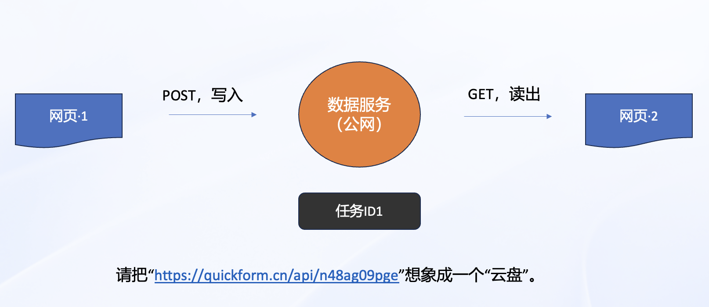
需要说明的是，在数据读写方面校园版和教师版略有不同。对于教师版来说，直接在浏览器上访问数据任务的WebAPI（就是提供的URL地址，https://quickform.cn/api/kpgugxdskx），就能看到所有的数据。但是，校园版（在线版本）只返回最新3条数据，需要增加“/all”，如https://quickform.cn/api/kpgugxdskx/all，这样才能返回所有数据。
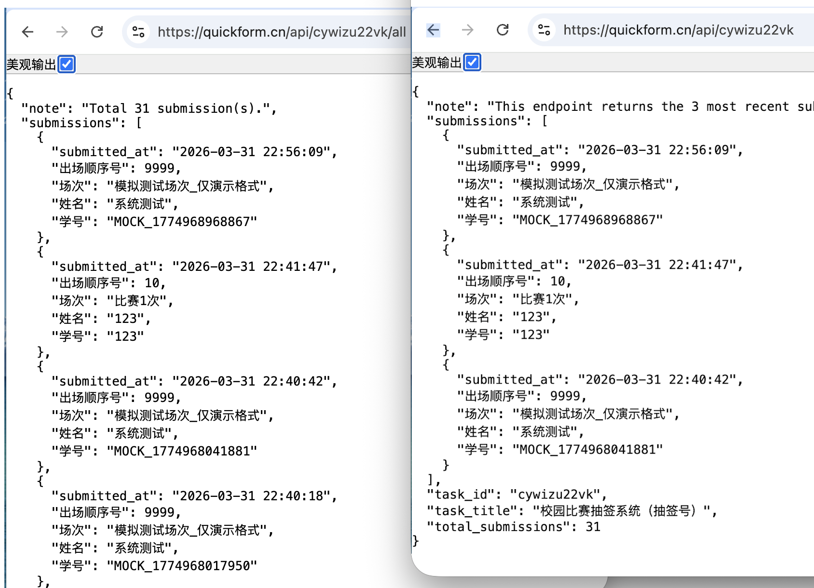
数据大屏的编写
数据大屏同样是交互网页的一种。跟学生端交互网页开发一样，我们也可以利用提示词借助AI大模型来编写。
按照能不能主动去访问外部网页，我们可以把能编程的大模型分成A、B两类。A类是内置技能，可以自己去访问网址的，比如扣子编程。B类是不具备访问网址能力，如deepseek、豆包（很奇怪，有时候deepseek也是能自己去访问网站的）。面对不同的大模型，要采用不同的提示词。
A类大模型：简洁版提示词
A类大模型严格说是编程智能体，如扣子编程、Trae等。面对A类，可以使用简洁版提示词：
提示词：我需要做一个数据大屏（数据看板），数据来自：https://quickform.cn/api/kpgugxdskx/all(GET请求可获取所有提交记录)。每隔10秒钟刷新一次。
一般来说，大模型会自动访问“https://quickform.cn/api/kpgugxdskx/all”，然后解析数据格式，设计数据看板。对于提示词，有很多种写法，你也可以这样：
提示词：我需要做一个数据大屏（数据看板），数据来自：https://quickform.cn/api/kpgugxdskx/all。每隔10秒钟刷新一次。
或者，这样也行。
提示词：我需要做一个类似数据大屏（数据看板）的网页，数据来自：https://quickform.cn/api/kpgugxdskx/all。每隔10秒钟刷新一次。
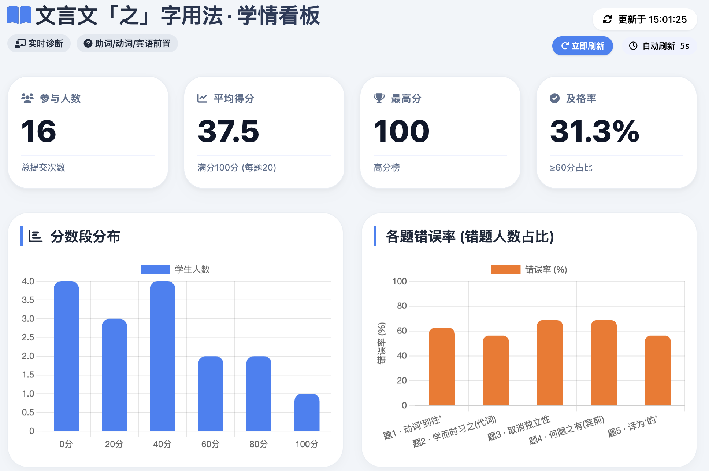
提示词：我需要做一个数据大屏（数据看板），数据来自：https://www.quickform.cn/api/o30myztdie/all(GET请求可获取所有提交记录)。每隔10秒钟刷新一次。
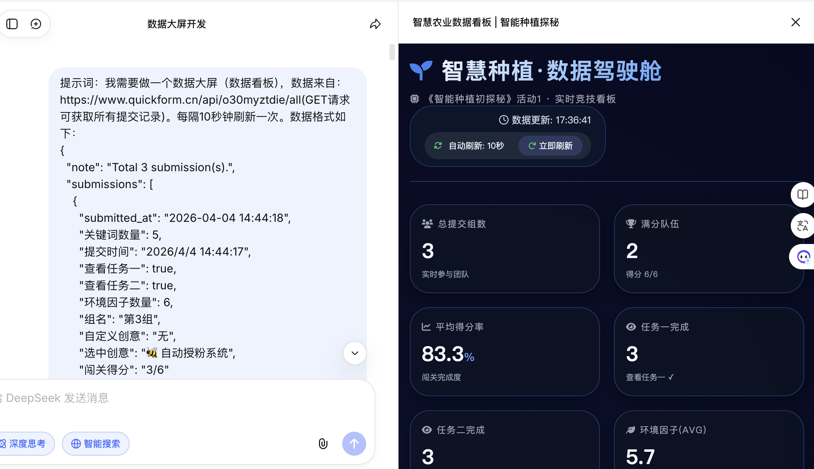
B类大模型：完整版提示词
对于deepseek、豆包之类，不能自己去访问网址的，使用“完整版提示词”，如：
提示词：我需要做一个数据大屏（数据看板），数据来自：https://www.quickform.cn/api/o30myztdie/all(GET请求可获取所有提交记录)。每隔10秒钟刷新一次。数据格式如下： { “note”: “Total 1 submission(s).”, “submissions”: [ { “submitted_at”: “2026-04-04 14:44:18”, “关键词数量”: 5, “提交时间”: “2026/4/4 14:44:17”, “查看任务一”: true, “查看任务二”: true, “环境因子数量”: 6, “组名”: “第3组”, “自定义创意”: “无”, “选中创意”: “🐝 自动授粉系统”, “闯关得分”: “3/6” } ], “task_id”: “o30myztdie”, “task_title”: “《智能种植初探秘》活动1”, “total_submissions”: 1 }
数据格式来自哪里？用浏览器打开“https://www.quickform.cn/api/o30myztdie/all”，然后复制出来即可。或者另存为txt文件，上传给大模型也行。在新版本（2026年4月30日更新）中，QuickForm在“数据分析”中提供了“数据大屏”的推荐提示词，成功率很高。
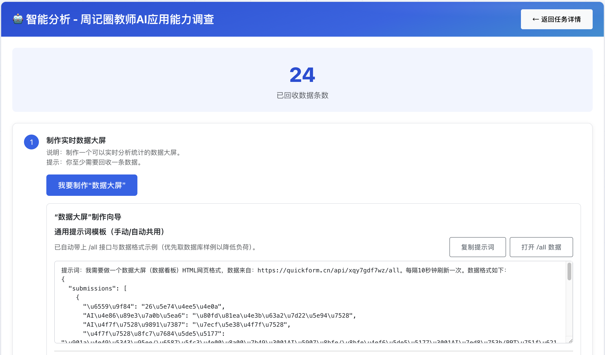
三个关键技巧
实际上，老师们编写数据大屏也常常会遇到问题。但只要记住三个关键即可：
1.打开“深度思考”
最好打开大模型的“深度思考”功能，让大模型有足够的时间分析数据格式，写出准确的代码。
2.提供数据样例。
如果大模型反馈无法读取api地址之类（看“思考”输出的内容），这时候生成的代码肯定不能用，大概率是模拟的。你就提供访问API地址，如“https://quickform.cn/api/kpgugxdskx/all”。将里面的文本复制出来给大模型看，也就是使用完整版的提示词。你可以重新提问，也可以追问：
你也可以保存为txt文件，作为附件补充。因为网页提交的数据和获得的数据格式并不一样，大模型无法脑补数据长什么样子。你如果不提供，能力再大的大模型也做不到。
这个方法同样适用于本地部署的教师版，即给出网址的同时，提供样例数据。
3.提供数据说明。
有些交互网页提交的数据很抽象，只有数字，或者ABCD之类的字母，不知道表示什么意思。如果想做出来的数据大屏有意义，必须要说明这些数据代表什么。简单的办法是，将交互网页作为附件发给大模型，或者在制作交互网页的对话中继续提需求。参考提示词如下：
我做了一个交互网页（student.html），收集了相关的数据。通过访问地址“https://192.168.31.53/api/kpgugxdskx”就能获取全部数据，数据的格式如下……。请设计一个数据大屏，每隔10秒钟刷新一次。
附：QuickForm的数据格式详解
QuickForm的数据格式非常简单，以JSON（JavaScript Object Notation，一种轻量级的数据交换格式）作为交换格式。返回一个对象，有“note”、“submissions”、“task_id”、“task_title”、“total_submissions”等5个字段。其中“submissions”的值为数组，数组内单条记录的值为对象，每一个对象，就是每一次提交收集的数据包。
{
"note": "提示",
"submissions": [
{记录1},
{记录2}
],
"task_id": "任务的API值",
"task_title": "任务名称",
"total_submissions": 记录数量，如2
}
以下面一个科学调查的数据任务为例。
{
"note": "This endpoint returns the 3 most recent submissions. Full list: https://quickform.cn/api/sg826h31vv/all",
"submissions": [
{
"age": 49,
"consent": "同意",
"gender": "女",
"health_status": "健康，无不适",
"measurement_date": "2026-04-06",
"measurement_site": "口腔",
"measurement_site_raw": "口腔",
"measurement_time": "11:08",
"pre_activities": [
"无"
],
"resting_confirmation": "是",
"submitted_at": "2026-04-06 11:09:01",
"temperature_celsius": 37.4
},
{
"age": 51,
"consent": "同意",
"gender": "男",
"health_status": "健康，无不适",
"measurement_date": "2026-04-02",
"measurement_site": "腋下",
"measurement_site_raw": "腋下",
"measurement_time": "22:46",
"pre_activities": [
"无"
],
"resting_confirmation": "是",
"submitted_at": "2026-04-02 22:50:21",
"temperature_celsius": 36.4
}
],
"task_id": "sg826h31vv",
"task_title": "科学调查（体温）",
"total_submissions": 2
}
注意事项：在线版和教师版的获取数据API有细微区别
在线版和校园版都需要加上“/all”才能看到所有数据，否则仅仅返回3条。但是，教师版不管是否加“/all”都返回全部数据。这样的设计是为了省流量。我们担心老师们对API不熟悉，给大模型写指令的时候，万一忘了提醒“每隔多少时间刷新一次”，就是造成服务器不断刷新。不仅服务器性能受影响，也会浪费流量。所以直接在浏览器上访问数据任务的WebAPI，校园版返回的是最新3条数据。
数据大屏的问题排查
如果遇到各种问题，也不用担心，肯定能找到解决方案。
1.可能是js文件没有正常加载。因为大模型生成的数据大屏页面，需要js代码的支持，这些js代码的地址往往在国外网站。我们多次发现电信的网站不能访问的概率最大。可以请大模型使用国内的地址，提示词如“请使用国内的js文件地址”。
2.可能是大模型的理解错误。我们发现deepseek特别会“胡思乱想”，“API地址”最好不要说成“服务器”，不然容易出错。
3.可能是QuickForm的流量限制。因为频繁读取会极大影响服务器的性能，QuickForm在线版限制了一定时间内的读写频率。请记着写上“每隔10秒钟刷新一次”。在数据任务详情处可以看到具体的接口访问统计。
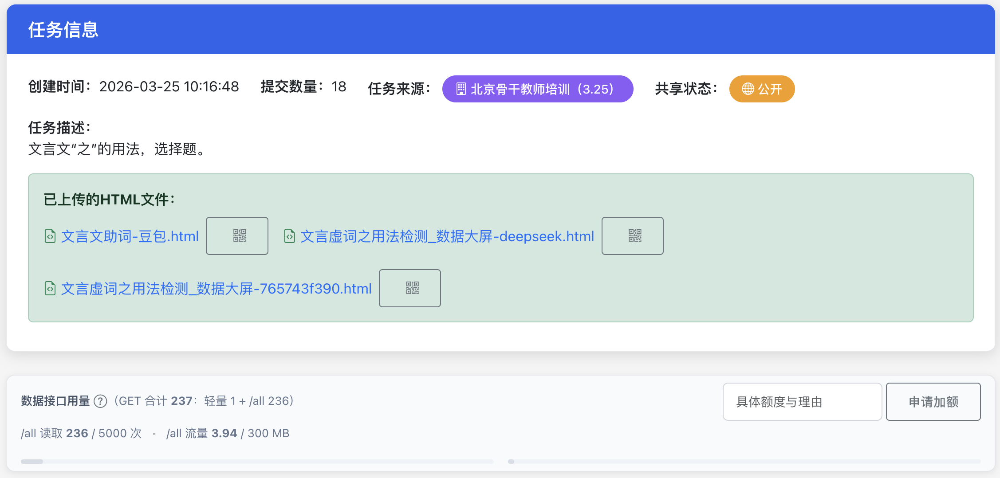
QuickForm内置一键分析
QuickForm内置了“一键分析”功能，点击即可使用大模型能力分析数据并生成报告。QuickForm本身没有内置大模型能力，需要接入大模型才能对数据进行分析。要使用“一键分析”功能，先要接入大模型，即申请大模型的APIKEY，即API密钥。
基础工作：配置大模型API密钥
API（Application Programming Interface，应用程序编程接口）是一种允许开发者将特定功能或数据集成到自己应用程序中的工具。借助大模型服务商提供的API服务，即可在自己的代码中远程调用大模型的能力，实现特定的功能。
API密钥（API key）是一种唯一标识符，是用来访问和调用API服务的凭证。API密钥用于验证请求者的身份，确保只有授权用户才能使用服务。这个密钥由API服务提供商发放，用户在注册并验证身份后，一般通过平台的用户界面获取。通过API，开发者可以发送HTTP请求到指定的URL，并附上必要的参数和API密钥，来获取所需的服务或数据。
大语言模型API允许开发者将大型语言模型集成到自己的应用程序中，通过发送HTTP请求到指定的URL，并附上必要的参数和API密钥，来获取模型的预测结果。
**注意，如果密钥被泄露，可能导致开销增加或服务滥用。**因此，我们应该确保自己的API密钥安全存储。但是也不用过于担心，引入API密钥能有效帮助我们减少财产损失。一旦API密钥遭到泄露，只要及时把账号内原来的API密钥删除，再创建新的API密钥，无需重新注册账号，就可以保全账户余额的安全。
教程：如何获取大模型API密钥
QuickForm支持多种大语言模型服务提供商，有硅基流动、deepseek、豆包和阿里云百炼等。对于其他模型，我们将陆续接入。
配置大模型云服务
要获取大模型API密钥，一般要先注册，缴费，然后根据提示一步一步操作，然后获取API密钥。
每个服务商需要分别注册和获取相应的密钥，密钥获取的注册网址和key的获取方式如下表所示（右拉可查看如何获取key）：
| 名称 | 注册网址 | 如何获取key | tokens赠送情况 |
|---|---|---|---|
| 硅基流动 | https://www.siliconflow.cn/ | 登陆后即可看到“API 密钥” | 提供大量免费模型 |
| deepseek(深度求索) | https://platform.deepseek.com/api_keys | 左侧API keys-创建API key | 500万tokens（注意要去首页认证领取） |
| 阿里云百炼 | https://dashscope.console.aliyun.com/apiKey | API-KEY管理-创建新的API-KEY Key | 无 |
| 豆包（火山引擎) | https://console.volcengine.com/home | 在“火山方舟”中选“API Key 管理“ | 50万tokens |
| moonshot(月之暗面) | https://platform.moonshot.cn/console/api-keys | 左侧API Key管理-新建 | 15.00 元（认证后领取） |
| glm(智谱清言) | https://open.bigmodel.cn/usercenter/apikeys | 左侧API keys-创建API key | 2500万tokens（有效期1个月） |
| ernie(文心一言) | https://console.bce.baidu.com/qianfan/ais/console/applicationConsole/application | 左侧应用接入-创建应用（不能重名）-同时需要API Key与Secret Key | 无（注意要实名认证开启服务，可在个人中心确认） |
| openrouter（AI模型聚合平台） | https://openrouter.ai/settings/keys | 右上角个人头像-Keys-Create Key | 无 |
注: 当前多家服务商提供了免费的模型token额度，或提供价格低廉的token购买方案（大约1元能购买1百万字的文字对话权限），用于基本教学已经足够。具体费用请参见个平台说明，同一平台的不同模型资费也有差异，请注意正确配置。
配置本地大模型
QuickForm教师版2.0开始支持本地大模型。只要你的电脑性能还可以，那就试试安装Ollama，用本地算力运行参数量较小的模型。
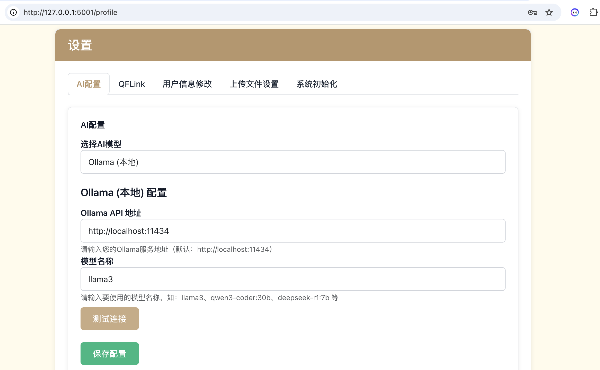
提升：QFLink和多模态数据回收
当QuickForm用最简单的方式解决了数据存储和读取的问题，各种新的用户需求不断提出，QuickForm也随之升级。QFLink、多模态数据回收、CLI接口和高级数据任务类型等，都是最新推出的新功能。
QF数据互联（QFLink）服务
QF数据互联服务简称“QFLink”，用于QuickForm系列版本的数据互联，实现在线版和其他版本之间的联动。其用途主要有两点：用户认证登录和数据任务迁移。新版的校园版（2.0）和教师版（2.5），默认都支持了QFLink。
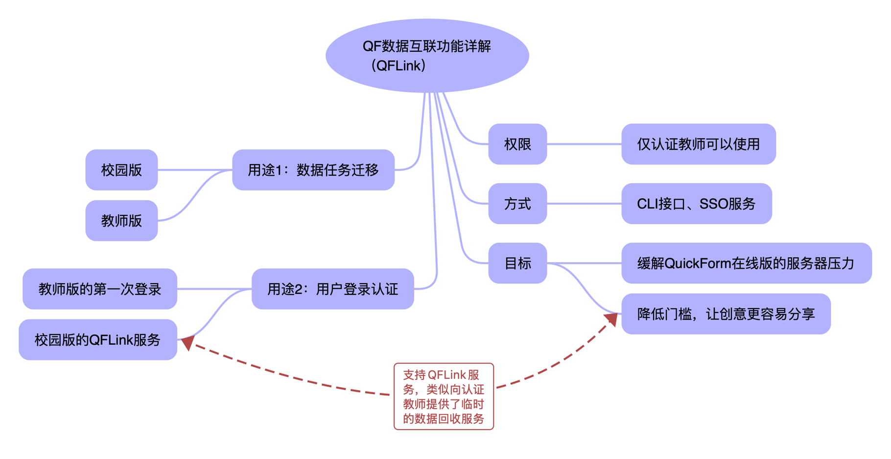
用户认证登录
QFLink提供了用户认证的功能，可以应用于QuickForm生态软件，让用户不需要在多个系统中重复注册。
用途1：教师版第一次登录
自教师版推出安装包、U盘版文件后，在本地部署QuickForm已经越来越容易。常常有老师问一些低级的问题，比如用户名和密码是什么？因为好多老师们不知道要打开“readme.md”文件，获取基本信息。
在教师版安装后第一次登录时，可以选择QFLink方式，用在线版的用户名和密码登录。登录后，默认管理账户就自动转为在线版的用户名，并且能直接使用“任务导入”功能，导入在线版的数据任务。不仅可以导入任务的名称、简介和附件（HTML），还可以自动导入数据。
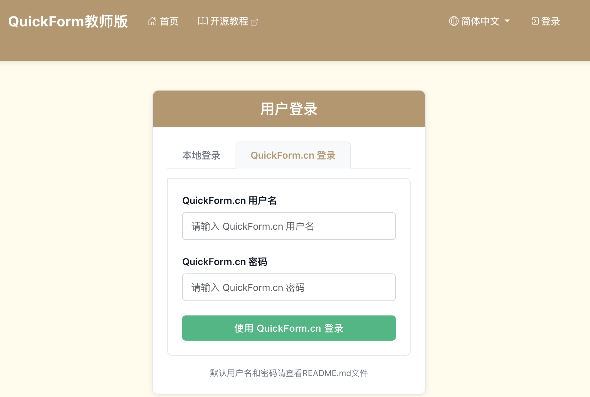
QFLink的用户身份认证功能适合企业提供的QuickForm教师版的收费服务。因为QuickForm在线版没有办法提供稳定可靠的数据回收服务，老师们在上公开课之类重要工作的时候总是特别焦虑。于是，有企业开始提供收费的教师版服务了，其原理是提供一台虚拟服务器（虚拟机），内置了教师版服务。用户购买服务类似“开机”，几乎没有任何技术门槛。启动后，输入在线版的用户名和密码，导入数据任务直接使用了。数据回收工作完成后（比如公开课结束），导出或者备份数据，关闭服务，就完成了所有工作。
注：急需稳定的数据回收服务，又没有能力部署服务器的老师，可以访问OpenHydra网站购买一个教师版服务，以备不时之需。
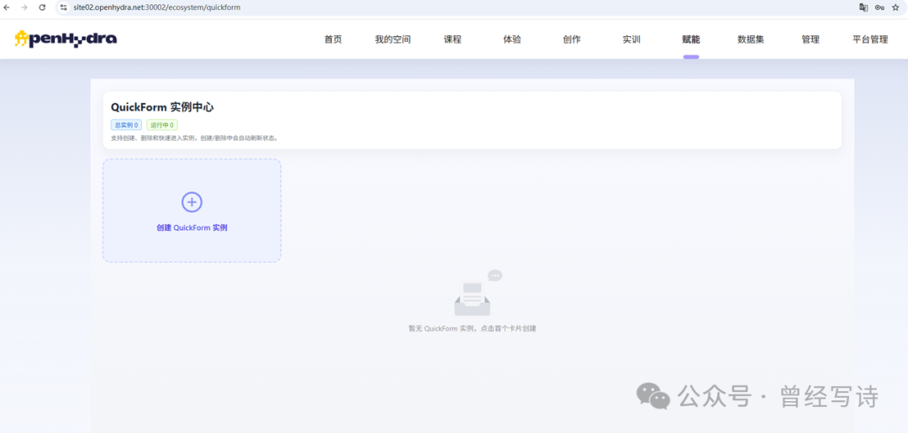
OpenHydra网站：https://openhydra.net
用途2：校园版的“临时”服务
当校园版的管理员开启了QFLink用户登录服务，在线版的用户都可以临时“借用地盘”使用数据回收服务。其使用方法和教师版完全一致，即选择“QFLink登录”，再“导入任务”，完成后导出任务。
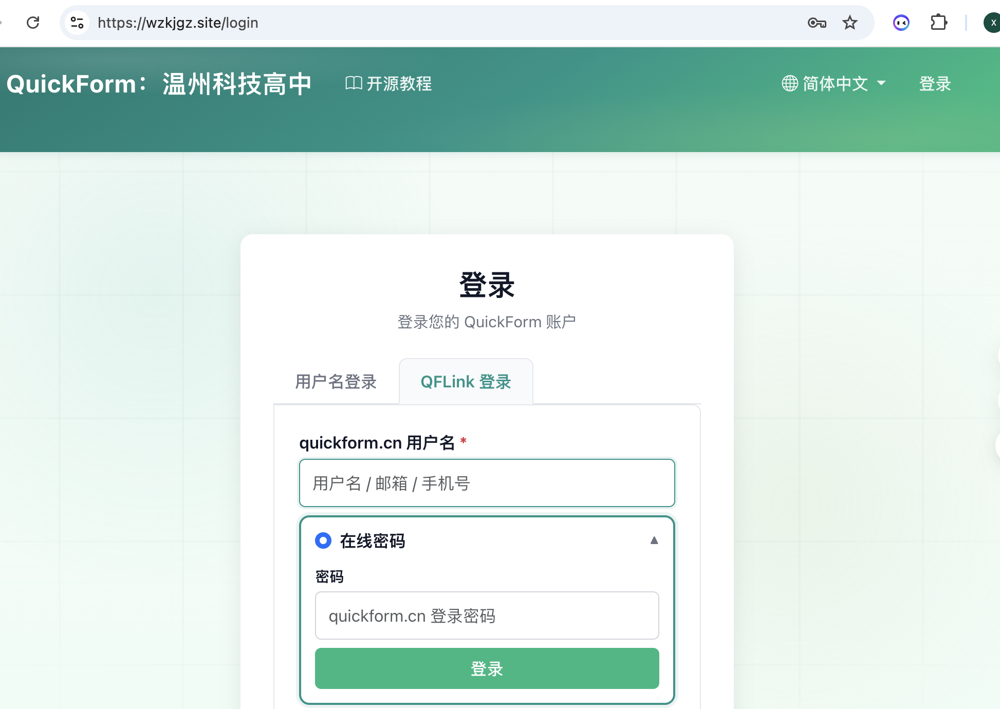
目前，温科高的校园版已经支持QFLink服务。很快的，中鸣人工智能教学平台，浙江省的官方AI教学平台都会相继推出支持QFLink服务的校园版QuickForm。敬请期待。
数据任务迁移
顾名思义，数据任务迁移是指把QuickForm的数据任务从某个版本迁移到另一个版本。自教师版2.0和校园版1.0开始，就提供了数据任务到导入和导出功能。而“数据任务迁移”则支持在线操作，更加便捷。
功能1：数据任务和系统分离
在QuickForm的理念中，数据任务是灵活的、独立的，类似一个Word、PPT文件，并没有“绑定”在某台服务器或者某个系统上。这样一来，即使在线版流量不足，即使网络服务出现问题，也可以随时转到其他服务器上使用。
功能2：智能替换API地址
数据任务和系统分离看起来很好，但实现起来并不容易。最大的困难在于API地址的变化。普通教师毕竟没有能力直接修改HTML的源码。为此，新版QuickForm都增加了“智能替换API地址”功能。当用户从在线版导入任务时，会自动将网页中的API地址更换为相对路径（可以不用理解这个名词）。这样一来，只要学生是通过教师版的服务器地址（扫码）访问的网页，不管IP地址怎么变换，都能正常提交数据，正常看大屏。再也不用担心老师们问，为什么在线版本正常，教师版用不了。只要你先把在线版的任务调试成功。
再次强调一下数据任务的最佳路径：基于在线版制作、调试 -> 教师版或者校园版导入使用。
多模态数据回收
模态（Modality），在这里指的是数据存在的形式或类型，如文本、图像、音频、视频、传感器数据等。多模态数据（Multimodal Data）是指由两种或两种以上不同模态的数据组合而成的数据集合。QuickForm一开始仅仅支持文本类数据，支持多模态数据回收，指的是其能够支持文件上传了。
多模态任务参考提示词
教师版默认支持多模态数据，上传后的文件存储在“/static/upload/”中以APIID命名的文件夹中。在线版目前需要申请试用，如图所示。支持多模态数据后，可以回收学生的手写、手绘的作品了。
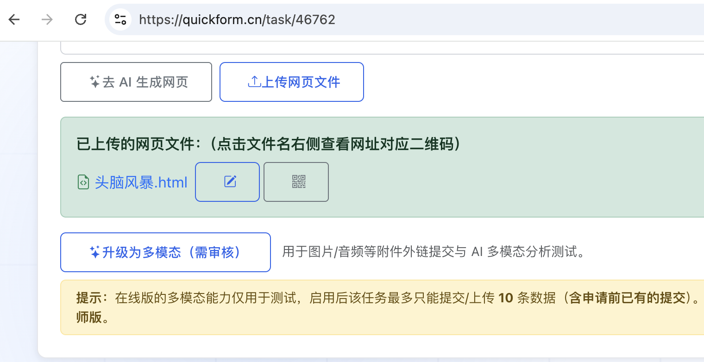
QuickForm在线版和校园版都提供了参考提示词。一般来说，只要提到文件，并强调文件不要编码为Base64形式，大模型就能理解，并写出正确的代码。
基础提示词：
提示词示例：
做一个采集图像数据的网页。标题为“校园文具分类图像采集”，用按钮选择“图像分类”（橡皮、笔、修正带、尺子、圆规、文具盒），然后选择图片的路径。上传前能自动将图片压缩，控制在2M以内。支持移动端，可以启动摄像头。数据提交到：/api/……J
多模态任务参考数据格式
多模态数据任务的数据格式完全兼容普通任务。点击任务的“数据分析”，就可以看到数据格式。多模态任务比常规任务仅仅多了一个字段“attachment”，其内容为多模态文件的URL（相对路径）。
{“fullName”: “谢作如”, “schoolName”: “温州科技高中”, “subjectStage”: “高中信息科技”, “qfUsername”: “xiezouru”, “problemDescription”: “收集实验照片”, “applyTimestamp”: “2026-06-02T07:00:56.394Z”, “attachment”: “/static/uploads/ktvkvyucxj/650be1d704.pdf”}
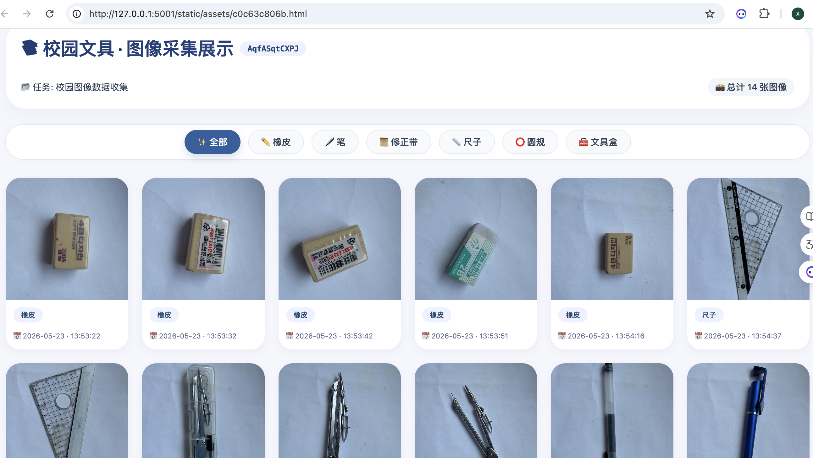
以教师版为例，制作图像采集的展示网页参考提示词如下：
用get方式访问“/api/AqfASqtCXPJ”，可以得到如下数据：
{
"note": "Total 14 submission(s)."
"submissions": [
{
"category": "橡皮",
"attachment": "/static/uploads/AqfASqtCXPJ/574efeb63b.jpg",
"submitted_at": "2026-05-23 13:53:22"
},
{
"category": "橡皮",
"attachment": "/static/uploads/AqfASqtCXPJ/92c416adbd.jpg",
"submitted_at": "2026-05-23 13:53:32"
}
],
"task_id": "AqfASqtCXPJ",
"task_title": "校园图像数据收集",
"total_submissions": 2
}
制作一个呈现数据的网页，默认出现全部图像，以小图形式呈现，图像类别可以用按钮选择。
多模态任务的注意事项
使用多模态任务容易引发上传缓慢、流量超额等问题。在QuickForm内部可以限制每一个上传文件的大小、格式等。但是针对某一个任务来说，最好是在前端页面做好限制。如图片之类，前端页面都可以增加压缩功能，使上传的文件符合要求。
注：校园版的多模态功能由管理员设置。如果没有开启，则需要在“个人设置”中申请，管理员审核。而教师版的多模态功能默认开启。
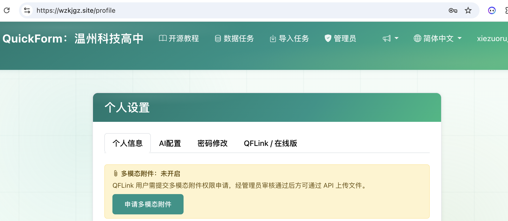
高级数据任务类型
QuickForm一直不提倡用来回收敏感数据。因为最初的设计是可读可写，使用同一个API。虽然方便，却很容易造成数据泄漏。为满足用户设计各种问卷形式的数据任务的需求，QuickForm在线版升级了数据任务的类型，模仿操作系统中的文件读写权限，将数据任务分为四类：
可读可写（1-1）。默认状态。
可读不可写（1-0）。适用于写入结束，但需要演示的任务。
不可读可写（0-1）。适用于敏感数据，如问卷、后台注册等。
不可读不可写（0-0）。任务关闭。
在数据任务列表中或者任务卡片上，点击“1-1可读可写”的文字，就会出现下拉菜单，然后可以切换状态。记得，要及时将自己不用的数据任务关闭。
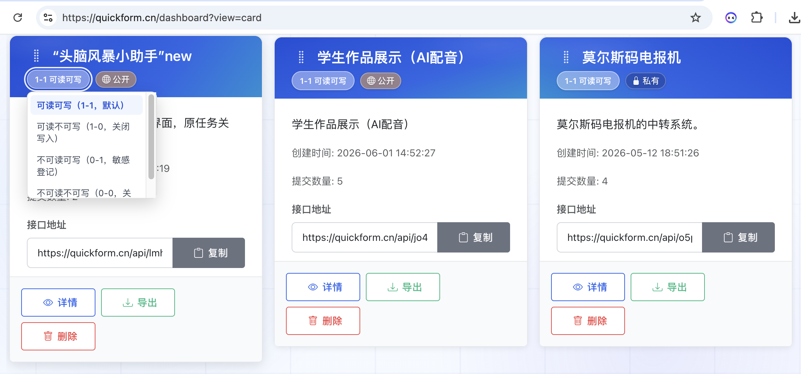
CLI接口
QuickForm CLI 接口供命令行、扣子编程、OpenClaw 等工具使用。适合高级用户，实现自动化创建与查看数据任务工作。
CLI接口说明：https://quickform.cn/cli
玩转：本地部署QuickForm
QuickForm是一个轻量级表单数据回收系统，专门为大模型生成的交互网页而设计。在大模型生成网页的同时，嵌入专用的数据地址后即可实现数据收集，进而实现数据分析、可视化呈现、报告生成。QuickForm采用了无加密形式的API数据接口，兼容绝大多数的大模型生成的代码，成功率特别高。
为了让更多教师最快速度用上QuickForm，体验AI赋能教学带来的各种便利，我们购买了云服务器，申请了域名，部署了线上的版本（演示地址：https://quickform.cn），注册后就能体会QuickForm的强大功能。
1.本地部署QuickForm的理由
虽然有了https://quickform.cn这个网站，我们依然期望有更多的老师能在本地部署QuickForm。理由很多，主要有以下几条：
1）来自海量访问的担忧。因为限于财力和能力，我们无法保证这个线上的QuickForm能服务很多教师。当用户一多，也许网站访问速度就会很慢，轻则影响体验，重则无法正常提供服务。因此我们期望老师们能部署自己的QuickForm，确保可以稳定、正常地使用。
2）来自学校规模的需求。有些学校的规模较大，而且在全校层面开展AI赋能教学，不仅仅信息科技一个学科。那么就很有必要自己部署一个QuickForm，就跟我校一样，以教研组为单位，不仅能确保服务稳定，还能促进内部交流。
3）来自网络环境的制约。有些学校可能平时上课的地方（机房）不能上公网。有些老师在陌生的环境临时上课，尤其是公开课，就很有必要在自己的电脑部署一个专属QuickForm。比如我的电脑就安装了一个，专供自己使用。
2.QuickForm的本地部署
我们把QuickForm分为在线版、校园版和教师版。本地部署的QuickForm，指的的是校园版和教师版。其中，QuickForm教师版开源，校园版免费提供给项目合作的单位（学校）。
QuickForm采用Python语言编写，支持多操作系统，能快速部署到自己的电脑上，学校的服务器上，然后在局域网中使用。当然，也可以像我们一样，购买云服务器，在公网上使用。
QuickForm文档地址：https://quickform.readthedocs.io/
2.1 部署QuickForm教师版
QuickForm教师版是一个开源软件，适用于每一位教师。老师们只要将QuickForm解压到本地电脑，然后运行bat文件即可，支持Windows、Linux、MacOS等系统。
启动QuickForm后，你的电脑就成为一台Web服务器，通过局域网地址即可访问。当然，你也可以通过一些网络软件，将本地端口映射到公网上。或者可以申请一个云服务器部署，但前提是要确保安全。
第一步、下载软件
访问QuickForm的开源仓库，即可在“teacher（教师版）”中找到下载链接。
开源仓库1：https://gitee.com/wstlab/quickform
开源仓库2：https://github.com/wstlab/quickform
飞书下载：https://my.feishu.cn/drive/folder/Q0FUf5KnLlQHJRdqyprck8YTnre
第二步、安装服务
对于动手能力较强，或者有编程技术的老师，推荐下载“纯代码”版，根据readme文件中的介绍，把库装好，运行“app.py”文件即可。
方式1：使用一键安装包
也可以下载“一键安装包”或者“安装版”。这些版本已经内置了Python，直接运行“QuickForm启动器.bat“即可。
QuickForm教师版2.0教程：https://mp.weixin.qq.com/s/31O2rwELzT5xydc_HBuSmA
注：感谢南宫市红庙中心学校的陈亮老师，为QuickForm教师版2.0做了安装版。
方式2：借助龙虾启动“App.py”
如果你的电脑运行不了一键安装包或者安装文件，强烈推荐用龙虾类工具（如Qclaw）来启动“App.py”。龙虾会分析代码，自主部署软件。
方式3：安装QuickForm的更多方法
还有很多简单的方式使用Quickfom，如下载中鸣版Thonny、mPython之类内置QuickForm的Python编辑器。
1）中鸣版Thonny：内置QuickForm
中鸣版Thonny，内置了Python3.8、XEduHub与QuickForm。
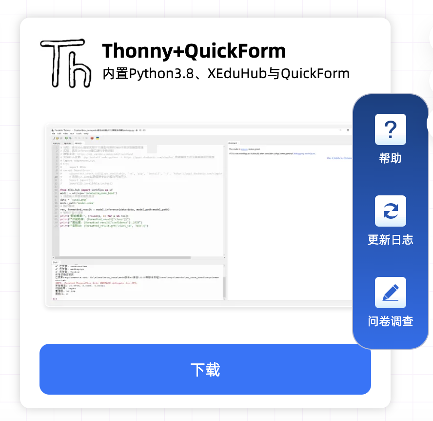
2）mPython：in7以下版本也能安装QuickForm
QuickForm“一键安装包”内置的是Python3.8，在Win7中不能运行。其实你只要安装Python3.7之前的版本，如3.65之类，就能流畅运行QuickForm教师版。当然，你也可以安装mPython的32位版本（mPython 0.6.0），然后打开并运行QuickForm存代码版的“app.py”文件。
地址：https://mpython.cn/software
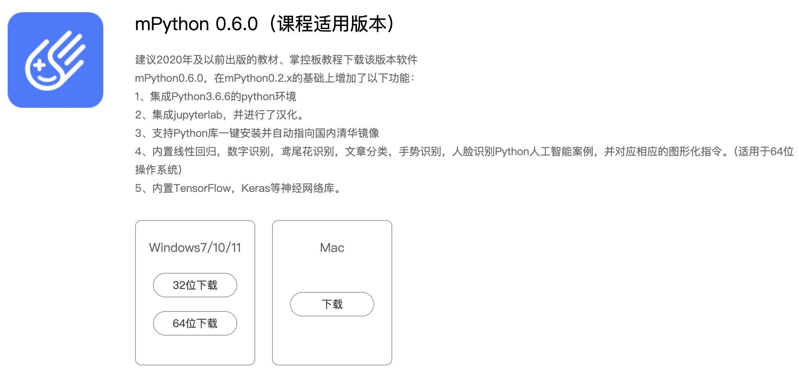
盛思之后推出的mPython，将内置QuickForm。
2.2 部署QuickForm校园版
QuickForm校园版是一个免费软件，仅面向项目成员开源。和教师版对比，校园版支持多用户，支持群组和交流功能，适合部署在校园内，供所有教师使用。
要获得QuickForm校园版，首先需要与项目组签署一个合作协议。合作协议的核心内容为能定期提供优秀案例分享给更多老师。我们期望能找到志同道合的朋友。
合作介绍：https://mp.weixin.qq.com/s/JIJSxCsL-ImGNuS2UnoAZg
协议内容：QuickForm校园版合作协议（第2版）
如果你有意向加入项目组，请先填写一个简单的问卷。我们将在2026年节后的开学初启动签约工作。
想加入QuickForm项目的意向表：https://wj.qq.com/s2/25715865/17b8/
3.本地部署的优势不足与特色功能
本地部署看起来麻烦，但优势很明显。我们还为其设计了一些特色功能。
3.1 本地部署的优势与不足
本地部署QuickForm拥有很多优势，如：
1）没有流量限制。QuickForm在线版出于无奈，只能用各种方法限制网络流量，不然再好的服务器也无法支撑众多老师的频繁使用。
2）数据相对安全。本地部署后，数据都存在本地了，肯定要安全多了。为什么不说绝对安全？只要联网就有安全隐患。
本地部署的QuickForm也存在弊端，那就是制作数据大屏、调试交互功能时，容易出现种种问题。因为大模型不知道通过API地址读出的数据是怎样的格式，毕竟大模型没法访问内网地址。因此，扣子编程上的“QF数据大屏”技能也不能使用了。
3.2 QF数据互联功能
为了解决网页调试难的问题，我们提供了“QF数据互联”功能。用户在本地部署的QuickForm中，输入QuickForm在线版的用户名和密码，就能将云端的数据任务导入到本地。在导入数据任务的同时，会将相关的附件也下载过来，甚至贴心地将API地址全部更改为本地版本的地址。也就是说，导入后直接可以使用！
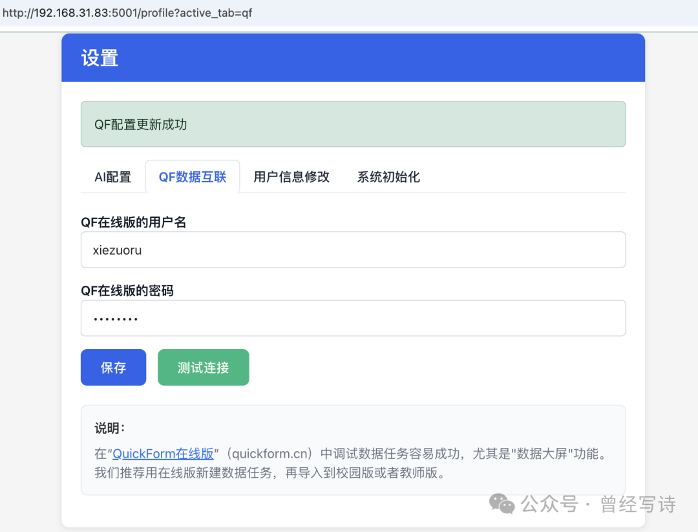
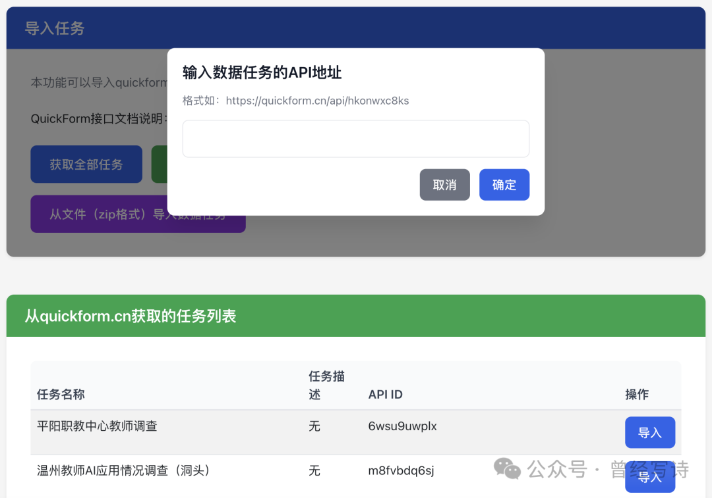
我们推荐的最佳路线：“在线版”新建任务 -> “在线版”调试网页 -> “在线版”上传网页 -> “本地版”导入任务
3.3 支持本地大模型
既然在本地部署了，那就“本地”到底吧。本地部署的QuickForm“AI配置”支持Ollama本地AI模型连接，能省钱就省钱吧。只要你的电脑性能还可以，那就试试本地部署大模型。
4.关于QuickForm的风险提示
因为QuickForm采用了无加密形式，只能适用于对安全不敏感的，临时性的教学数据采集工作，如课前调查，课中反馈，课后检测等。无论是使用线上的QuickForm.cn服务还是本地部署Quickform，都不建议使用QuickForm收集敏感数据，容易造成数据泄密。
技巧：让QuickForm发挥作用
我们认为，QuickForm不过是一个将网页“孤岛”打通，让数据汇集的小工具，具体的能力在于如何与大模型对话，准确表达意图和逻辑。所以，真正的能力不在于QuickForm，而在于AI的使用，在于周边各种工具的协同应用。为帮助大家用好QuickForm，我们整理了一些小技巧。
网页调试技巧
1-1 请使用谷歌浏览器
要点：请使用谷歌浏览器！
问题描述：如果出现数据提交错误，换了电脑就不能使用之类的问题，请记住，要用谷歌浏览器。
理由：要相信大模型的能力。
1-2 先网络再本地
要点：先网络调试再本地使用
问题描述：常常有老师表示，跟大模型沟通了很多轮，还是没有成功。一问，往往是使用本地部署的教师版。
理由：本地部署后的调试相对来说要复杂，建议在在线演示的校园版（也称在线版）上测试成功后，再移到本地版本。尤其是第一次使用数据大屏功能，最好在“quickform.cn”
和大模型对话（提示词）技巧
2-1 要不要深度思考
要点：强烈推荐开“深度思考”
问题描述：如果制作复杂功能的网页，如要制作数据大屏，最好做到两点：1.提供数据样式，避免服务器不能去读数据；2.开“深度思考”。还有，不要说“服务器”。
理由：常常有老师说制作数据大屏功能识别，什么读取失败，什么跨域(CORS)限制，最后发现没有打开大模型的深度思考。 https://chat.deepseek.com/share/czo10vn4sz77n5vzwc
2-2 和大模型对话要不要新开对话
要点：灵活掌握“新开对话”的机会
问题描述：根据情况，有时要继续对话，有时要新开对话。
理由：对于做好交互网页，分析数据或者做“数据大屏”，最好继续对话。让大模型理解前面的对话内容，知道这些数据代表什么。对于新的任务，千万不要在已有对话中“继续”，会造成“上下文污染”。
数据看板制作
3-1 记得提供数据样例
要点：记得向大模型提供数据样例
问题描述：有些大模型不能直接访问数据地址，要提供数据样例。无论是在线的校园版还是本地的教师版，如果你需要大模型做一个数据大屏（数据看板），除了基本提示词外，最好提供数据样例。
理由：如果大模型能自己去读这个地址，那么仅仅提示词就行。大模型一般都提供了读网页的智能体（技能）。但是有时会读不成功，背后原因很多，也许是被quickform限流了，有时候读不了，比如本地部署的教师版。所以，只要提供数据样例，就一定能成功。所谓的样例，其实就是打开API的地址，将内容复制给大模型。
样例：https://chat.deepseek.com/a/chat/s/0c82ec8e-fd65-4a81-95c2-b659023525a7
3-2 数据看板为何忽然间不行了
要点：注意流量，请不要频繁刷新！
问题描述：本来好好的，数据看板忽然间不行了。大概率是流量超标了。
理由：因为很多老师不知道让网页定时刷新，造成QuickForm.cn网站的网络流量很大，我们得支付很高的费用。为了省钱，我们只能限制了流量。不过你只要写个申请理由，就恢复了。
网页部署方法
4-1 网页如何嵌入媒体
要点：提供带互联网访问地址的媒体文件
问题描述：如果用普通的大模型做网页，要将媒体上传到网络上，链接地址。如将视频传到B站上。如果你的网页比较复杂，强烈推荐Trae之类的工具。
理由：没有什么比免费服务更香了，QuickForm的视频也都放在B站上。
4-2 多文件网页的部署
要点：使用网站托管服务
问题描述：如果制作的网页不仅仅一个文件，而是多个文件，包括图片、视频之类，甚至拥有多个网页文件，那么你做的就不是“网页”而应该是“网站”。QuickForm自带的功能仅仅支持网页。对于网站，可以借助各种静态网站托管网站来部署你的完网页。其实热铁盒和devfile之类的工具，使用方法都很简单。
推荐1：热铁盒
网址：https://host-intro.retiehe.com/
教程和说明：https://mp.weixin.qq.com/s/vE312S_94xGvd3ZdBP9gWg
推荐2：devfile
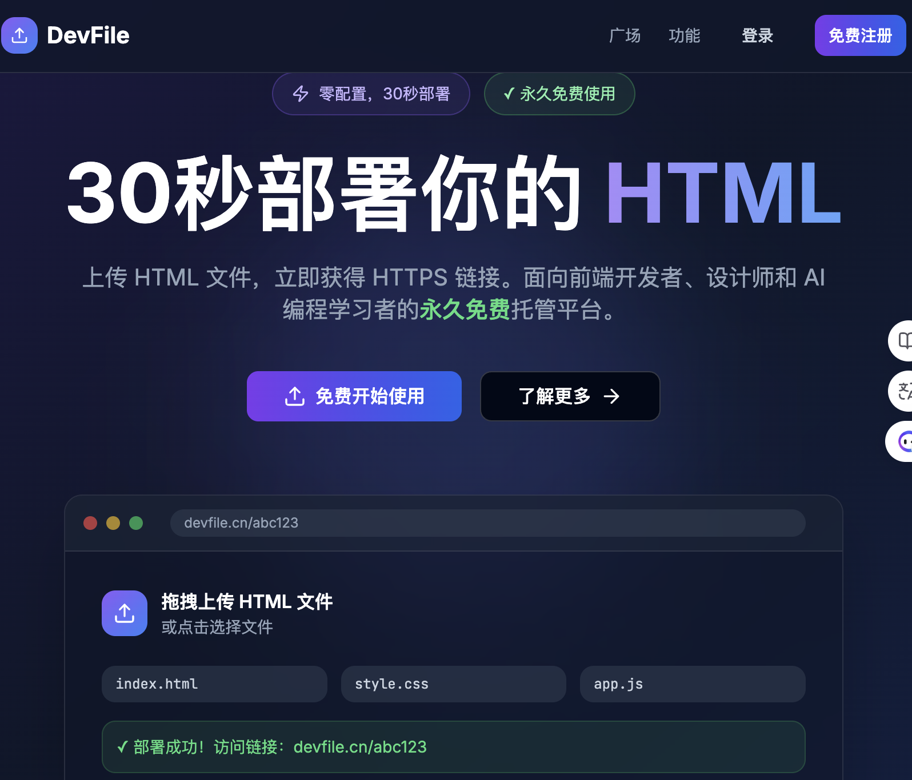
推荐3：Yunmind
推荐4：EdgeOne Pages
各种疑难问题
5-1 浏览器乱码或者页面空白
要点：使用国内资源
问题描述：浏览器打开网页不正常，如图表显示，浏览器中出现乱码等。大部分的原因是，“cdn.jsdelivr.net”这个域名访问不正常。
理由：deepseek、豆包等大模型生成的前端网页中，js往往会使用cdn.jsdelivr.net，看html代码如：
应用案例
常规课堂数据收集
例如：课前，快速生成调查表，了解学生的前置知识或兴趣倾向；课中，借助学习终端实时收集学生对讲解内容的理解程度；课后，生成随堂小测验，即时查看答题情况与正确率。
案例1：
案例2：
案例3：
案例4：为回收数据编写实时展示大屏
作者: 谢作如
发布时间: 2025-12-05
原文链接: https://mp.weixin.qq.com/s/KQzyEy7q5-Z-OO43LOgXwA
平阳的谢贤晓老师发来需求，问QuickForm是否支持数据大屏。一开始没理解数据大屏是什么，直到她发来一张图。
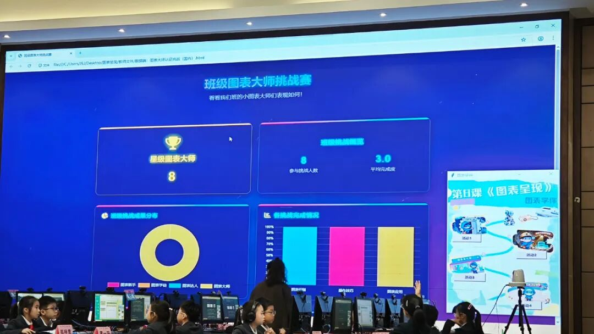
原来是这个！我说早就支持啦，只是方建文博士的团队还没来得及把示例的教程写出来而已。之前也是群里的老师（貌似来自四川的彭老师）提出需求，说希望用POST方式写入数据，GET方式读取数据。所以，直接在浏览器上访问WebAPI（就是提供的URL地址），就能看到所有的数据。
我打开deepseek，翻出自己之前做的”英语连连看”网页，增加如下提示词：
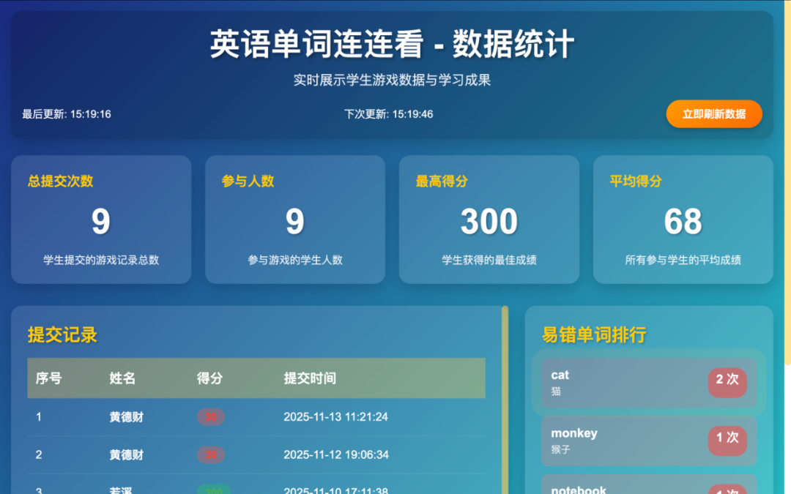
提示词中的附件，来自访问”https://wzkjgz.site/quickform/api/submit/75db2938-b3ce-474c-b4fa-8e1146a42b7b”得到的数据，另存为文本文件就行了。从图中可以看出，效果还是挺好的，大模型的编程能力让人惊叹。
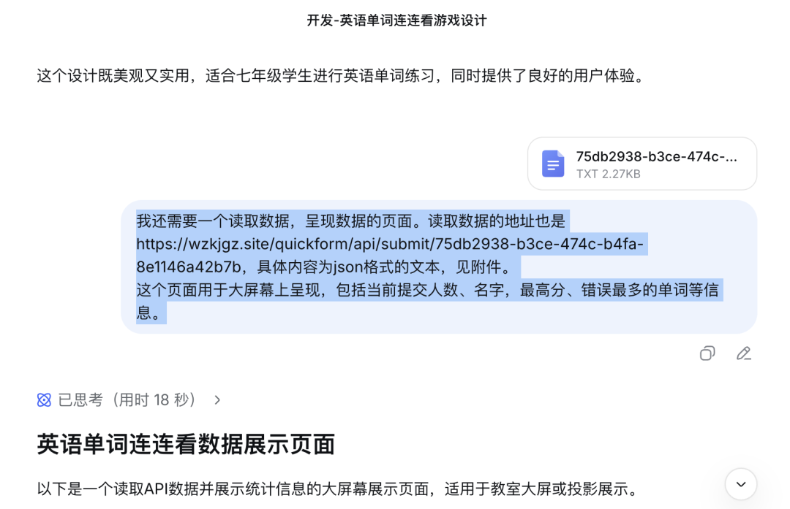
我们会发现，QuickForm提供是一个快速数据接口，如何利用这个接口则看老师们的创意了。只要敢想，没有什么是做不到的。当然，如果要实现更多功能，则需要了解更多关于交互网页的知识。我们准备设计几个公益讲座，介绍交互网页的开发知识。
顺便给大家看一下用户数量，挺让我们激动的。
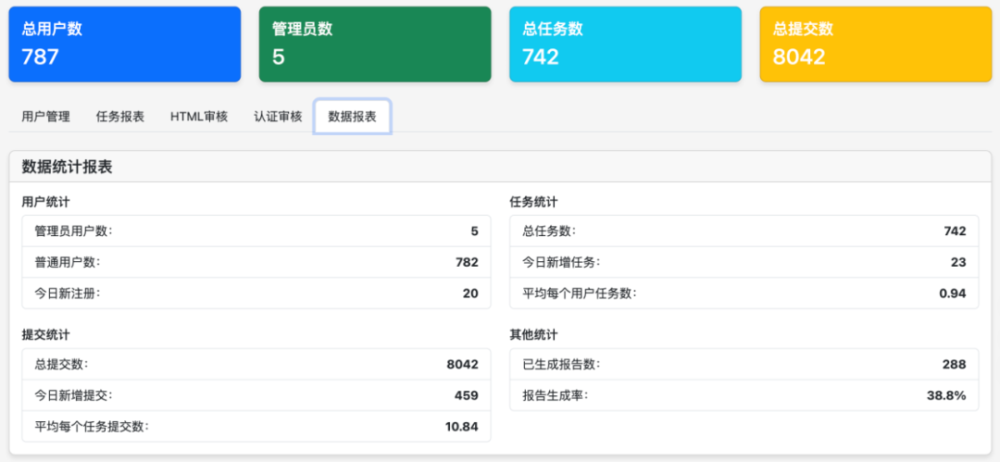
后续
我和林淼焱商量了一下，觉得GET方式返回所有数据，对服务器的压力会比较大。老师在操作的时候容易误操作。我们继续修改代码，调整功能，具体如下：
默认返回最新的三条数据，如：
https://wzkjgz.site/quickform/api/submit/UwwZESikX34
需要返回全部数据，则访问新地址，如：
https://wzkjgz.site/quickform/api/submit/UwwZESikX34/all
本文档由AI助手整理自微信公众号文章
创意教学应用
任何技术都一样，即使设计者都不知道最终能解决哪些问题。我们也是在老师的作品中得到各种灵感。
游戏化教学
如“英语单词连连看”，可记录学生完成时间、正确配对数、常错单词等，助力词汇教学分析。
如“打字游戏”。
仿真实验数据采集
物理、化学等学科的模拟实验中，学生调整参数、记录结果的数据均可自动提交，便于评估其实验理解程度。
学习行为过程分析
在编程或算法学习网页中，记录学生的每一步操作路径，帮助教师判断其是否真正理解执行逻辑。
真实问题解决
借助QuickForm，我们能解决各种真实问题。只要涉及到数据交互的工作，都可以借助QuickForm来完成。
学生的跨学科学习
例如，学生制作的“社区噪声调查”“睡眠时间问卷”等网页，可通过 QuickForm 回收真实数据。再如，在AI教育中借助交互网页收集真实数据、构建数据集，“用数据解决问题”的门槛也将显著降低。
教师的教学管理
如，会议考勤记录。
温州科技高中的案例精选
QuickForm本来就为温州科技高级中学而设计。我们针对不同学科做一下梳理。
历史
语文：互动阅读
科创：
心理健康
开源教程
QuickForm研究与应用文章汇集
QuickForm自发布以来，得到中小学教师的好评。老师们不仅自己开始使用，还撰写教程和研究文章，包括论文。4月份，我们借助OpenClaw进行了一次汇集。
一、谢作如专题
标题 1：为你的课堂教学设计一个实时数据统计大屏
摘要：平阳的谢贤晓老师发来需求，问 QuickForm 是否支持数据大屏。文章介绍了如何使用 QuickForm 的数据接口，配合 DeepSeek 大模型，快速生成交互式数据展示页面。通过 WebAPI 可以实时读取提交的数据，在大屏幕上呈现当前提交人数、最高分、错误最多的单词等信息。文章还介绍了后续功能优化：默认返回最新三条数据，如需返回全部数据则访问/all 地址。QuickForm 提供的是一个快速数据接口，如何利用这个接口则看老师们的创意了。
标题 2：QuickForm：让交互网页走出”数据孤岛”困境
摘要：谢作如和林淼焱老师撰写，探讨 QuickForm 如何解决交互网页数据孤岛问题。文章介绍 QuickForm 作为数据回收工具，能够实现教学数据的实时采集和分析，打破传统交互课件无法回收数据的限制，让 AI 生成的交互网页真正具备数据驱动教学的能力。
标题 3：用最简单的方式实现教学数据的实时分析（扣子技能篇）
摘要：谢作如老师撰写，介绍如何使用扣子（Coze）技能实现教学数据的实时分析。文章详细讲解 QuickForm 与扣子平台的集成方法，帮助教师零代码搭建数据采集和分析系统，实现课堂数据的自动化处理和可视化展示。
标题 4：没有外网也能使用 QuickForm
摘要：谢作如老师撰写，解决内网环境下的 QuickForm 使用问题。文章介绍如何在局域网或没有外网的环境中部署和使用 QuickForm，确保数据安全和隐私保护，满足学校内部网络环境下的教学数据采集需求。
标题 5：互动阅读：浅尝语文课上的 AI 赋能
摘要：谢作如老师撰写，探索 AI 技术在语文教学中的应用。文章介绍如何使用 QuickForm 配合 AI 工具，在语文课堂上实现互动阅读、实时反馈和数据采集，展示 AI 赋能传统学科教学的创新实践。
二、象山卢老师专题
标题 1：老师们，别再自己写代码了！QuickForm 官方技能一键生成数据大屏，太香了！
摘要：象山卢老师撰写，介绍 QuickForm 官方技能如何一键生成数据大屏。文章展示扣子编程中”技能”的优势，通过官方技能快速搭建课堂数据可视化系统，无需编程基础即可实现专业级的数据展示效果。
标题 2：一分钟搞定 QuickForm 教师版！信息科技教师亲测：这才是适合校园的 AI 工具
摘要：卢老师撰写，面向信息科技教师的 QuickForm 教师版快速上手指南。文章介绍教师版的特色功能和校园部署方案，帮助教师快速搭建课堂数据采集系统，实现 AI 赋能教学的最后一公里。
标题 3：有问必答 | 手把手教，如何用 quickform 生成座位号登入 + 教师监控页面
摘要：卢老师撰写的教程，详细讲解如何使用 QuickForm 生成座位号登录系统和教师监控页面。文章提供完整的操作步骤和配置方法，帮助教师实现课堂签到、学生座位管理和实时监控功能。
标题 4：手搓一个调查表，比问卷星快多了！QuickForm+DeepSeek+ 扣子，一条龙搞定
摘要：卢老师撰写，介绍如何快速制作课堂调查表。文章对比 QuickForm 与传统问卷工具的优势，展示 QuickForm+DeepSeek+ 扣子的组合应用，实现从问卷设计到数据分析的一站式解决方案。
标题 5：QuickForm 教师版教师大屏不显示签到数据？一个字符串解析问题搞定它
摘要：卢老师撰写的问题解决指南，针对教师大屏不显示签到数据的常见问题。文章分析字符串解析的技术细节，提供具体的解决方案和调试方法，帮助教师快速排查和解决问题。
标题 6：别手动分析了！QuickForm 数据报告的三种生成方式，第一种最省心，第三种最惊艳
摘要：卢老师撰写，介绍 QuickForm 数据报告的三种生成方式。文章对比不同方法的特点：第一种使用官方技能一键生成，最省心省力；第二种通过扣子平台自定义配置；第三种结合 DeepSeek 大模型生成惊艳的可视化报告。帮助教师根据需求选择合适的数据报告生成方案。
标题 7：信息课开学点名慢？学生互动难？QuickForm 工具一次解决
摘要：卢老师撰写，针对信息课开学点名和学生互动难题提供解决方案。文章展示如何使用 QuickForm 快速实现课堂签到、座位管理和学生互动功能，通过数据大屏实时监控课堂状态，提升信息科技课堂的管理效率和互动体验。
三、伍老师专题
标题 1：傻瓜式本地部署 QuickForm 全流程
摘要：伍老师撰写，提供 QuickForm 本地部署的详细教程。文章介绍在教师版开源后，如何在本地环境快速部署 QuickForm，包括环境配置、依赖安装、服务启动等完整流程，适合有一定技术基础的教师参考。
标题 2：在群晖 Docker 部署 QuickForm - 智能表单分析与报告生成系统
摘要：伍老师撰写，介绍如何在群晖 NAS 的 Docker 环境中部署 QuickForm。文章详细讲解群晖 Docker 的配置步骤、容器部署方法和系统设置，帮助拥有群晖设备的教师快速搭建私有的数据采集和分析系统。
标题 3：不会编程，也能做课堂交互网页和数据统计大屏
摘要：伍老师撰写，面向零编程基础教师的 QuickForm 入门指南。文章展示如何无需编程即可创建课堂交互网页和数据统计大屏，通过可视化配置和模板快速实现 AI 赋能教学。
标题 4：小龙虾全流程快速安装部署 quickform
摘要：伍老师撰写，介绍小龙虾环境下的 QuickForm 快速安装部署方法。文章提供简化的部署流程和一键安装方案，帮助教师快速搭建可用的 QuickForm 服务。
四、安徽王盼专题
标题 1：QuickForm：打通 AI 赋能教育的”最后一公里”
摘要：安徽王盼老师撰写，探讨 QuickForm 在 AI 教育应用中的关键作用。文章分析 AI 赋能教育的痛点，展示 QuickForm 如何打通从 AI 内容生成到数据采集的完整闭环，实现真正的 AI 驱动教学。
标题 2：一线教师唯有”用”起来，AI 才能真正改变课堂：用 Deepseek+QuickForm，搞定我的精准开学第一课
摘要：王盼老师撰写，分享开学第一课的实际应用案例。文章展示如何将 DeepSeek 与 QuickForm 结合，设计精准的开学第一课，通过实时数据采集和分析了解学生情况，实现精准教学。
标题 3：QuickForm 进阶技能｜赋能精准教学的智能学情分析助手
摘要：王盼老师撰写，介绍 QuickForm 进阶应用技能。文章详细讲解如何利用 QuickForm 构建智能学情分析系统，通过数据采集、处理和分析，为教师提供精准的学情洞察，支持教学决策。
标题 4：QuickForm 本地部署：从 AI 出题到数据闭环，一位县城教师的”柳暗花明”之旅
摘要：王盼老师撰写，记录一位县城教师部署和使用 QuickForm 的完整历程。文章分享从接触 QuickForm 到本地部署、从 AI 出题到数据闭环的全过程，展示基层教师在 AI 教育应用中的探索和成长。
五、Wellwe
标题 1：学个技能：QuickForm，让 AI 课堂游戏”活”起来，数据回收从此零门槛（从获取数据到数据大屏）
摘要：Wellwe 撰写，介绍如何使用 QuickForm 让 AI 课堂游戏真正”活”起来。文章讲解从数据获取到数据大屏展示的完整流程，帮助教师实现课堂游戏的数据化管理和可视化展示。
标题 2：学个技能：今天晚上备课用 Deepseek 和 QuickForm 做了 2 个课堂游戏 (快速生成”快问快答”和”匹配游戏”）
链接：学个技能：今天晚上备课用 Deepseek 和 QuickForm 做了 2 个课堂游戏 (快速生成”快问快答”和”匹配游戏”）
摘要：Wellwe 撰写的实战案例，展示如何用 DeepSeek 和 QuickForm 快速制作课堂游戏。文章介绍”快问快答”和”匹配游戏”的制作过程，提供可直接复用的方法和技巧。
六、周歌的信息科技课堂
标题 1：零代码！DeepSeek + QuickForm 造一个会”双向通信”的打字练习平台
摘要：周歌老师撰写，介绍如何零代码构建双向通信的打字练习平台。文章展示 DeepSeek 与 QuickForm 的组合应用，实现学生端练习和教师端监控的实时双向通信功能。
标题 2：扔掉 U 盘！用 Trae+QuickForm 让初中信息科技课”活”起来
摘要：周歌老师撰写，介绍如何用 Trae 和 QuickForm 革新初中信息科技课堂。文章展示如何摆脱传统 U 盘传输，实现课堂数据的实时采集和互动，让信息科技课堂更加生动有趣。
标题 3：为你信息科技课堂设计一个实时数据大屏
摘要：周歌老师撰写，专门针对信息科技课堂的数据大屏设计指南。文章详细介绍如何为信息科技课程定制实时数据展示系统，包括学生操作监控、作品展示、成绩统计等功能。
七、山西辛小瑞
标题 1：从”好看”到”好用”：QuickForm 让 AI 生成的交互课件真正”活”起来
摘要：山西辛小瑞老师撰写，探讨如何让 AI 生成的交互课件从”好看”变为”好用”。文章介绍 QuickForm 如何为 AI 课件注入数据能力，实现课件与学生的真正互动，提升教学效果。
标题 2：基于 Quickform 精心打造 2026 初中信息科技模拟系统正式上线！
摘要：山西辛小瑞老师撰写，介绍基于 Quickform 打造的 2026 初中信息科技模拟系统。文章详细讲解模拟系统的设计理念和功能特点，包括试题管理、在线考试、自动评分、数据分析等核心功能，为初中信息科技学业水平考试提供全面的备考支持。
标题 3：数据驱动，精准备考——小瑞老师基于 Quickform 设计的临汾市 2026 信息科技模拟系统正式上线
摘要：山西辛小瑞老师撰写，介绍临汾市 2026 信息科技模拟系统的正式上线。文章展示如何利用 Quickform 实现数据驱动的精准备考，通过模拟考试数据采集和分析，帮助教师了解学生薄弱环节，制定针对性的复习策略，提升备考效率。
八、烛光创客空间
标题 1：【QuickForm】之一：从一线教师视角看 QuickForm 的创新属性
摘要：烛光创客空间撰写，从一线教师视角分析 QuickForm 的创新属性。文章探讨 QuickForm 在教学实践中的独特价值，包括零代码门槛、实时数据采集、灵活定制等特点，展示 QuickForm 如何满足一线教师的实际教学需求。
标题 2：【QuickForm】之二：关于 QuickForm 的数据分析设置
摘要：烛光创客空间撰写，详细介绍 QuickForm 的数据分析设置方法。文章讲解如何配置数据分析参数、选择合适的分析维度、生成定制化数据报告，帮助教师充分利用 QuickForm 的数据分析功能优化教学决策。
九、其他团队
台州朱珍珍
摘要：台州朱珍珍老师撰写，记录第一次使用 QuickForm 的体验和感受。文章分享从接触、学习到初步应用的完整过程，为初次接触 QuickForm 的教师提供参考和借鉴。
未知
摘要：介绍 AI 制作交互式网页系列教程的第四部分，重点讲解交互式网页的数据回收与分析。文章展示如何使用 QuickForm 等工具实现网页数据的自动采集、存储和分析，完善交互式网页的功能闭环。
先见
摘要：介绍 Aegis 与 QuickForm 的组合应用，补齐教学可视化工具的数据环节。文章展示如何将 Aegis 的可视化能力与 QuickForm 的数据采集功能结合，构建完整的教学数据可视化解决方案。
赛文博思
摘要：详细介绍在绿联 NAS 上部署 QuickForm 的方法，同时提供群晖、本地 PC 和公网部署的参考方案。文章面向拥有 NAS 设备的教师，帮助搭建私有化的数据采集和分析平台。
平阳钟老师
摘要：平阳钟云晴老师撰写的案例分享，展示如何用 QuickForm 配合交互网页实时统计课堂教学活动数据。文章提供具体的应用场景和操作方法，帮助教师实现课堂数据的自动化采集。
实用教育技术
摘要：实用教育技术撰写，介绍一款无需联网即可使用的 AI 课堂互动工具。文章展示 QuickForm 在内网环境下的部署和应用方案，帮助学校在保障数据安全的前提下实现 AI 赋能课堂互动，适合网络条件有限的学校参考。
舟山李老师
摘要：舟山李老师撰写，介绍如何使用 QuickForm 解决数字学评单的孤岛问题。文章展示如何通过 QuickForm 实现学评单数据的联网采集和分析，打破单机限制，支持教学评估的数字化转型。
杭州余校长
摘要：杭州余校长分享的视频教程，展示如何在三分钟内使用 QuickForm 搭建课堂数据采集分析反馈系统。文章（视频）提供快速上手指南，帮助教师快速掌握 QuickForm 的核心功能。
小白的技术课堂
摘要：小白老师撰写，介绍如何利用 QuickForm 实现数据回收并制作数据大屏。文章提供详细的操作步骤和配置方法，帮助教师快速搭建课堂数据可视化系统。
君之交
摘要：君之交分享飞象老师与 QuickForm 的结合应用，展示如何实现实时数据大屏显示。文章介绍具体的整合方案和操作方法，为使用飞象平台的教师提供参考。
屏智工坊
摘要：屏智工坊分享 QuickForm 表单在教学中的应用。文章介绍 QuickForm 作为教学小工具的使用方法和技巧，展示如何在日常教学中灵活运用表单功能。
小周先生
摘要：小周先生撰写的入门教程，介绍如何使用 quickForm 提取网页数据并结合 AI 进行数据分析。文章展示从数据获取到 AI 分析的完整流程，帮助教师快速上手 quickForm 的基础功能，实现课堂数据的智能化处理。
福建林老师
摘要：福建林老师撰写，介绍如何使用 QuickForm 助力 SIoT 数据可视化。文章展示如何轻松实现物联网数据大屏，将 SIoT 采集的设备数据通过 QuickForm 进行实时展示和分析，为物联网教学提供直观的数据支持。
为乐而活
摘要：为乐而活分享的 AI 赋能信息科技教学实用经验。文章介绍三步搞定一节课的方法：场景模拟激发学习兴趣、数据收集实时掌握学情、评价可视化呈现学习效果，为信息科技教师提供可复制的 AI 教学实践方案。
风来花即开
摘要：风来花即开介绍 QuickForm 作为教师专属效率神器的核心价值。文章展示如何无需代码、免费创建互动网页，让课堂活起来，通过实际案例说明 QuickForm 在降低技术门槛、提升教学效率方面的优势，适合零编程基础的教师参考。
编写扣子技能实现自动分析交互式网页数据
原创：信息教与学
时间：2026年2月6日 22:16
地区：广东
在上一篇推文 AI制作交互式网页（三）：答题类交互式网页使用问题与解决方案 中，我们聚焦答题类交互式网页的使用痛点，解决了防作弊、时间控制、作答缓存等核心问题，让AI制作的答题网页真正适配初中信息课的机房场景。
然而，很多老师在使用过程中发现了一些新问题：
即便网页功能再完善，学生的答题数据也无法回收和分析，更不能统计正确率、分析错题分布。
网页学生用得很开心，但我怎么知道他们学到了什么？
简而言之，交互式网页只实现了 “交互”，却没发挥出 “数据驱动教学” 的价值。
QuickForm 就是专为这个场景打造的解决方案。今天这篇内容，我们就从 “是什么、怎么用、怎么用得更省心” 三个维度，把交互式网页的数据回收与分析讲透，让 AI 制作的网页从 “能用、好用” 升级为 “能沉淀数据、能指导教学”。

QuickForm 是什么？
说到 “数据回收”，很多人的第一反应是：
“要不要搭数据库？要不要写后端？要不要部署服务器？”
这一步，往往直接劝退了 90% 的人。
QuickForm 的价值，恰恰就在这里。
QuickForm 是一个”只管接收和存储数据”的轻量级数据回收系统，由温州科技高级中学 AI科创中心联合温州大学开发，想要详细了解的老师可以移步谢作如老师的文章 QuickForm教师版开源了！（关于QuickForm的问与答）。
它的 核心特点 是：
不要求你懂后端
不限制你用什么前端技术
不关心你的网页是AI写的还是手写的
你只需要做一件事：
把数据，用 POST 请求，提交到它给你的接口地址。
就这么简单。
如何使用QuickForm？
大家可以根据自己的需求选择 公网快速使用、本地部署使用、本地临时使用（推荐）。
场景一：公网快速使用
免部署，适合快速使用、回收非隐私数据
公网版无需搭建服务器，直接用现成的接口即可，步骤如下：
注册并登录 QuickForm 公网平台
官网地址：https://quickform.cn/

获取 QuickForm 接口 URL
创建一个数据回收任务，系统会自动生成专属的接口地址URL，例如：
https://quickform.cn/api/submit/xxx；


如果想要创建更多任务，可以在右上角”个人设置”中提交教师身份认证，通过后，可以创建无限个任务。
集成提交代码到网页
在 AI 制作的交互式网页中，添加一段 JavaScript 提交代码，核心是调用 QuickForm 的 API，将采集到的数据以 JSON 格式提交；
这一环节可以参考平台提供的提示词由 AI代劳。

测试数据提交
打开网页完成交互，提交数据后，在 QuickForm 后台查看是否成功接收。

数据分析
平台支持数据导出，也可以参考平台提供的数据分析提示词生成数据分析报告。另外，由于直接访问接口地址即可查看所有提交数据，所以也可以借助这个数据来源生成实时数据分析大屏。


场景二：本地部署使用
需要服务器，适合大规模校内使用、回收隐私数据
建议参考伍老师的这篇文章 傻瓜式本地部署QuickForm全流程，讲得很详细。这个教师版，打包好的，无源码，如果使用后觉得还不错可以部署开源的校园版，具体看这一篇文章 我们为QuickForm起草了一份特立独行的合作协议。
部署完成后使用方法与公网使用一致。内置了一个管理员账号：wst，密码：quickform，当然你也可以另外注册一些账号再使用。
场景三：本地临时使用（推荐）
一键启动免安装，适合频繁临时使用、回收隐私数据
打包程序下载地址：
https://my.feishu.cn/drive/folder/Q0FUf5KnLlQHJRdqyprck8YTnre
下载完成后，哪节课需要用到数据回收就提前启动，也很方便。
用 Skills 解决QuickForm的”最后一公里”
到这里，很多老师可能会遇到一些新的问题：
知道要回收数据，但不知道该采集哪些维度，比如答题网页应该采集正确率、答题时间等等，那么体验实践类的网页应该采集什么数据呢？
知道要提交数据，但不知道怎么设计合理的 JSON 数据结构，字段不全分析不了，字段太多又冗余。
就算搞定了数据提交，如何快速衔接已经设计的数据结构做实时可视化分析大屏呢？
为了解决上面这些问题，我把完整流程封装成了一个 Skill：交互式网页数据回收。
Skills即技能，最近国内外都挺火的，和工作流相似又有所区别，详细见 一文带你看懂，火爆全网的Skills到底是个啥。

这个 Skill 的核心目标 只有一个：
把”交互式网页 → 数据结构设计 → QuickForm接口接入 → 实时数据分析大屏”这条链路，一次性跑通。
这个 Skill 解决了哪些问题：
分析网页类型（答题类 / 教学活动类）
设计合理的数据采集策略
生成清晰可解释的数据结构
自动修改网页，加入QuickForm数据提交逻辑
生成实时数据分析大屏
除此之外，这个 Skill 还能帮助 你：
自动识别并询问你是否需要采集学生个人信息；
对于教学活动类网页，从专家的角度设计数据采集维度；
生成的实时数据分析大屏与上传网页风格保持一致；
生成网页后对代码生成质量进行验证，确保网页正常运行。
使用方法：
这个 skill我已经上架在扣子的技能商店并且设置 开源 了，大家可以自行体验，或者复制到个人空间再优化改进。

直接打开这个技能，点击使用
https://www.coze.cn/?skill_share_pid=7598218594635366446在新对话中使用该技能，只需要上传你的交互式网页文件和 QuickForm上生成数据接口地址即可开始。
tips：扣子现在暂时不支持上传 html文件，你可以先将网页文件扩展名修改为txt再上传！
案例分享

《物联数据需采集》巩固练习题
https://www.coze.cn/s/cVQC87LrgS4/模拟直播网络搭建
https://www.coze.cn/s/QsrxfJpz-8Y/

MQTT通信机制模拟
https://www.coze.cn/s/k19E3f3_U5c/

总结
回顾整个系列，四篇推文，是一条非常清晰的路径：
1️⃣ AI 帮你做出网页
2️⃣ 免费部署，让它跑起来
3️⃣ 优化交互，让学生愿意用
4️⃣ 回收数据 + 分析效果
AI 制作交互式网页解决了 “从 0 到 1 做网页” 的问题，QuickForm 则补上了 “数据回收” 的基础环节，而 Skills 更是解决了 “数据采集策略设计 + 分析落地” 的最后一公里问题。
当数据开始流动，你就会发现：网页不再是”展示工具”,而是变成了 可反馈、可迭代、可评估的教学工具。这，才是 AI 制作交互式网页真正值得投入的地方。
作者：信息教与学
原文链接： https://mp.weixin.qq.com/s/SpDw1uDx3LD91hAGhNP9xw
学习资料
大模型提示词设计
大模型提示词设计。
大模型
提示词设计
网页开发基础
了解网页开发的基础知识，有助于我们做出更多有创意的应用。
HTML入门
1.HTML的标签
HTML（超文本标记语言）是网页的骨架，它使用标签来定义网页的结构。
基础HTML结构：
<!DOCTYPE html>
<html>
<head>
<title>我的第一个网页</title>
</head>
<body>
<h1>欢迎来到我的网页</h1>
<p>这是我的第一个段落。</p>
</body>
</html>
常用HTML标签。
<h1>到<h6>：标题标签
<p>：段落标签
<a href="...">：链接标签
<img src="..." alt="...">：图片标签
<div>和<span>：容器标签
2.CSS样式表
3.js脚本
前端交互知识
根据代码运行的位置，Web应用分为前端和后端技术。网页的交互技术，其实指的就是前端和后端的交互。需要强调的是，浏览器的数据传输（即前后端交互）经历了好几个阶段。最初使用“Form”，后来使用XMLHttpRequest，现在则基本上使用Fetch API。具体请参考“学习资料”中的“网页开发基础”。
第一代：原生 Form 表单提交
Form 表单是“Web 1.0”时代唯一的数据提交方式，只适合简单的登录、注册，完全无法做复杂交互。
范例代码
<!-- 最原始的数据提交方式 -->
<form action="/submit" method="POST">
<input name="username" />
<button type="submit">提交</button>
</form>
第二代：XMLHttpRequest
为解决“Form”必须刷新页面的致命问题，让前端可以不刷新页面和服务器通信，2005年，随着“AJAX”概念的提出，XMLHttpRequest开始普及，开启了 Web 2.0 时代。
范例代码
// 经典 XHR 写法（繁琐）
const xhr = new XMLHttpRequest();
xhr.open('POST', '/submit', true); // true = 异步
xhr.onload = function() {
if(xhr.status === 200) {
console.log(xhr.responseText); // 局部更新页面，不刷新
}
};
xhr.send('username=test');
第三代：Fetch API
“XMLHttpRequest”的设计非常繁琐、不直观，编程难度很大。“Fetch API”于2011年首次提出，2015年被 WHATWG 正式标准化，并在同年开始被主流浏览器原生支持。
范例代码：
// 现代简洁写法
async function postData() {
const res = await fetch('/submit', {
method: 'POST',
body: JSON.stringify({ username: 'test' }),
headers: { 'Content-Type': 'application/json' }
});
const data = await res.json();
console.log(data);
}
表单基础知识
表单的地址和方法：POST、GET
数据库基础
数据库基本知识
服务器知识
Web服务器。
服务器和Web服务器
IP地址和端口
氛围编程入门
氛围编程。